Chapter 11: Angular Momentum¶
Introduction¶
Angular momentum is the rotational counterpart of linear momentum. Any massive object that rotates about an axis carries angular momentum, including rotating flywheels, planets, stars, hurricanes, tornadoes, whirlpools, and so on. The helicopter shown in the chapter-opening picture can be used to illustrate the concept of angular momentum. The lift blades spin about a vertical axis through the main body and carry angular momentum. The body of the helicopter tends to rotate in the opposite sense in order to conserve angular momentum. The small rotors at the tail of the aircraft provide a counter thrust against the body to prevent this from happening, and the helicopter stabilizes itself. The concept of conservation of angular momentum is discussed later in this chapter. In the main part of this chapter, we explore the intricacies of angular momentum of rigid bodies such as a top, and also of point particles and systems of particles. But to be complete, we start with a discussion of rolling motion, which builds upon the concepts of the previous chapter.
11.1 Rolling Motion¶
Learning Objectives
By the end of this section, you will be able to:
- Describe the physics of rolling motion without slipping
- Explain how linear variables are related to angular variables for the case of rolling motion without slipping
- Find the linear and angular accelerations in rolling motion with and without slipping
- Calculate the static friction force associated with rolling motion without slipping
- Use energy conservation to analyze rolling motion
Rolling motion is that common combination of rotational and translational motion that we see everywhere, every day. Think about the different situations of wheels moving on a car along a highway, or wheels on a plane landing on a runway, or wheels on a robotic explorer on another planet. Understanding the forces and torques involved in rolling motion is a crucial factor in many different types of situations.
For analyzing rolling motion in this chapter, refer to Figure 10.20 in Fixed-Axis Rotation to find moments of inertia of some common geometrical objects. You may also find it useful in other calculations involving rotation.
Rolling Motion without Slipping¶
People have observed rolling motion without slipping ever since the invention of the wheel. For example, we can look at the interaction of a car’s tires and the surface of the road. If the driver depresses the accelerator to the floor, such that the tires spin without the car moving forward, there must be kinetic friction between the wheels and the surface of the road. If the driver depresses the accelerator slowly, causing the car to move forward, then the tires roll without slipping. It is surprising to most people that, in fact, the bottom of the wheel is at rest with respect to the ground, indicating there must be static friction between the tires and the road surface. In Figure 11.2, the bicycle is in motion with the rider staying upright. The tires have contact with the road surface, and, even though they are rolling, the bottoms of the tires deform slightly, do not slip, and are at rest with respect to the road surface for a measurable amount of time. There must be static friction between the tire and the road surface for this to be so.
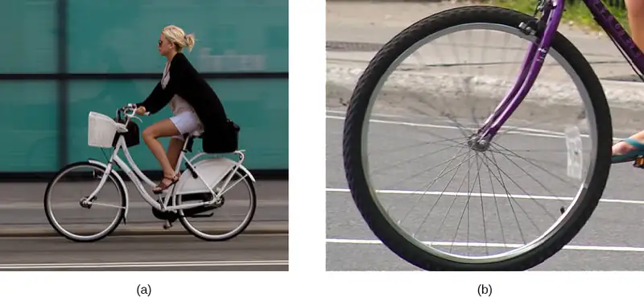
To analyze rolling without slipping, we first derive the linear variables of velocity and acceleration of the center of mass of the wheel in terms of the angular variables that describe the wheel’s motion. The situation is shown in Figure 11.3.
![Figure a shows a free body diagram of a wheel, including the location where the forces act. Four forces are shown: M g is a downward force acting on the center of the wheel. N is an upward force acting on the bottom of the wheel. F is a rightward force, acting on the center of the wheel, and f sub s is a leftward force acting on the bottom of the wheel. The force f sub s is smaller or equal to mu sub s times N. Figure b is an illustration of a wheel rolling without slipping on a horizontal surface. Point P is the contact point between the bottom of the wheel and the surface. The wheel has a clockwise rotation, an acceleration to the right of a sub C M and a velocity to the right of v sub V M. The relations omega equals v sub C M over R and alpha equals a sub C M over R are given. A coordinate system with positive x to the right and positive y up is shown. Figure c shows wheel in the center of mass frame. Point P has velocity vector in the negative direction with respect to the center of mass of the wheel. That vector is shown on the diagram and labeled as minus R omega i hat. It is tangent to the wheel at the bottom, and pointing to the left. Additional vectors at various locations on the rim of the wheel are shown, all tangent to the wheel and pointing clockwise.](img/cnx-uphysics-11-01-rollnoslip.webp)
From Figure 11.3(a), we see the force vectors involved in preventing the wheel from slipping. In (b), point P that touches the surface is at rest relative to the surface. Relative to the center of mass, point P has velocity \(-R\omega\mathbf{\hat{i}}\), where R is the radius of the wheel and \(\omega\) is the wheel’s angular velocity about its axis. Since the wheel is rolling, the velocity of P with respect to the surface is its velocity with respect to the center of mass plus the velocity of the center of mass with respect to the surface:
Since the velocity of P relative to the surface is zero, \(v_{P}=0\), this says that
equation callout
Thus, the velocity of the wheel’s center of mass is its radius times the angular velocity about its axis. We show the correspondence of the linear variable on the left side of the equation with the angular variable on the right side of the equation. This is done below for the linear acceleration.
If we differentiate Equation 11.1 on the left side of the equation, we obtain an expression for the linear acceleration of the center of mass. On the right side of the equation, R is a constant and since \(\alpha=\frac{d\omega}{dt},\) we have
equation callout
Furthermore, we can find the distance the wheel travels in terms of angular variables by referring to Figure 11.4. As the wheel rolls from point A to point B, its outer surface maps onto the ground by exactly the distance travelled, which is \(d_{\text{CM}}.\) We see from Figure 11.4 that the length of the outer surface that maps onto the ground is the arc length \(R\theta\). Equating the two distances, we obtain
equation callout
![A wheel, radius R, rolling on a horizontal surface and moving to the right at v sub C M is drawn in two positions. In the first position, point A on the wheel is at the bottom, in contact with the surface, and point B is at the top. The arc length from A to B along the rim of the wheel is highlighted and labeled as being R theta. In the second position, point B on the wheel is at the bottom, in contact with the surface, and point A is at the top. The horizontal distance between the wheel’s point of contact with the surface in the two illustrated positions is d sub C M. The arc length A B is now on the other side of the wheel.](img/cnx-uphysics-11-01-rolldist.webp)
Example 11.1 Rolling Down an Inclined Plane
A solid cylinder rolls down an inclined plane without slipping, starting from rest. It has mass m and radius r. (a) What is its acceleration? (b) What condition must the coefficient of static friction \(\mu_{\text{s}}\) satisfy so the cylinder does not slip?
Strategy
Draw a sketch and free-body diagram, and choose a coordinate system. We put x in the direction down the plane and y upward perpendicular to the plane. Identify the forces involved. These are the normal force, the force of gravity, and the force due to friction. Write down Newton’s laws in the x- and y-directions, and Newton’s law for rotation, and then solve for the acceleration and force due to friction.
Solution
a. The free-body diagram and sketch are shown in Figure 11.5, including the normal force, components of the weight, and the static friction force. There is barely enough friction to keep the cylinder rolling without slipping. Since there is no slipping, the magnitude of the friction force is less than or equal to \(\mu_{s}N\). Writing down Newton’s laws in the x- and y-directions, we have
![A diagram of a cylinder rolling without slipping down an inclined plane and a free body diagram of the cylinder. On the left is an illustration showing the inclined plane, which makes an angle of theta with the horizontal. The cylinder is shown to be at rest at the top, then moving along the incline when it is lower. On the right is a free body diagram. The x y coordinate system is tilted so that the positive x direction is parallel to the inclined plane and points toward its bottom, and the positive y direction is outward, perpendicular to the plane. Four forces are shown. N j hat acts at the center of the cylinder and points in the positive y direction. m g sine theta i hat acts at the center of the cylinder and points in the positive x direction. Minus m g cosine theta j hat acts at the center of the cylinder and points in the negative y direction. Minus f sub s i hat acts at the point of contact and points in the negative x direction.](img/cnx-uphysics-11-01-inclplane.webp)
Substituting in from the free-body diagram,
we can then solve for the linear acceleration of the center of mass from these equations:
However, it is useful to express the linear acceleration in terms of the moment of inertia. For this, we write down Newton’s second law for rotation,
The torques are calculated about the axis through the center of mass of the cylinder. The only nonzero torque is provided by the friction force. We have
Finally, the linear acceleration is related to the angular acceleration by
These equations can be used to solve for \(a_{\text{CM}},\alpha,\:\text{and}\:f_{\text{s}}\) in terms of the moment of inertia, where we have dropped the x-subscript. We rewrite \(a_{\text{CM}}\) in terms of the vertical component of gravity and the friction force, and make the following substitutions.
From this we obtain
Note that this result is independent of the coefficient of static friction, \(\mu_{\text{s}}\).
Since we have a solid cylinder, from Figure 10.20, we have \(I_{\text{CM}}=mr^{2}\text{/}2\) and
Therefore, we have
b. Because slipping does not occur, \(f_{\text{s}}\le\mu_{\text{s}}N\). Solving for the friction force,
Substituting this expression into the condition for no slipping, and noting that \(N=mg\:\cos\:\theta\), we have
or
For the solid cylinder, this becomes
Significance
- The linear acceleration is linearly proportional to \(\sin\:\theta.\) Thus, the greater the angle of the incline, the greater the linear acceleration, as would be expected. The angular acceleration, however, is linearly proportional to \(\sin\:\theta\) and inversely proportional to the radius of the cylinder. Thus, the larger the radius, the smaller the angular acceleration.
- For no slipping to occur, the coefficient of static friction must be greater than or equal to \((1\text{/}3)\tan\:\theta\). Thus, the greater the angle of incline, the greater the coefficient of static friction must be to prevent the cylinder from slipping.
Check Your Understanding
A hollow cylinder is on an incline at an angle of \(60{}^{\circ}.\) The coefficient of static friction on the surface is \(\mu_{s}=0.6\). (a) Does the cylinder roll without slipping? (b) Will a solid cylinder roll without slipping?
Answer
a. \(\mu_{\text{s}}\ge\frac{\tan\:\theta}{1+(mr^{2}\text{/}I_{\text{CM}})}\); inserting the angle and noting that for a hollow cylinder \(I_{\text{CM}}=mr^{2},\) we have \(\mu_{\text{s}}\ge\frac{\tan\:60{}^{\circ}}{1+(mr^{2}\text{/}mr^{2})}=\frac{1}{2}\tan\:60{}^{\circ}=0.87;\) we are given a value of 0.6 for the coefficient of static friction, which is less than 0.87, so the condition isn’t satisfied and the hollow cylinder will slip; b. The solid cylinder obeys the condition \(\mu_{\text{s}}\ge\frac{1}{3}\tan\:\theta=\frac{1}{3}\tan\:60{}^{\circ}=0.58.\) The value of 0.6 for \(\mu_{\text{S}}\) satisfies this condition, so the solid cylinder will not slip.
It is worthwhile to repeat the equation derived in this example for the acceleration of an object rolling without slipping:
equation callout
This is a very useful equation for solving problems involving rolling without slipping. Note that the acceleration is less than that of an object sliding down a frictionless plane with no rotation. The acceleration will also be different for two rotating objects with different rotational inertias.
Rolling Motion with Slipping¶
In the case of rolling motion with slipping, we must use the coefficient of kinetic friction, which gives rise to the kinetic friction force since static friction is not present. The situation is shown in Figure 11.6. In the case of slipping, \(v_{\text{CM}}-R\omega\neq 0\), because point P on the wheel is not at rest on the surface, and \(v_{P}\neq 0\). Thus, \(\omega\neq\frac{v_{\text{CM}}}{R},\alpha\neq\frac{a_{\text{CM}}}{R}\).
![Figure a shows a free body diagram of a wheel, including the location where the forces act. Four forces are shown: M g is a downward force acting on the center of the wheel. N is an upward force acting on the bottom of the wheel. F is a force to the right, acting on the center of the wheel, and f sub k is a force to the left acting on the bottom of the wheel. The force f sub k is equal to mu sub k times N. Figure b is an illustration of the wheel rolling and slipping on a horizontal surface. The wheel has a clockwise rotation, an acceleration to the right of a sub C M and a velocity to the right of v sub V M. omega does not equal v sub C M over R and alpha does not equal a sub C M over R. A coordinate system with positive x to the right and positive y up is shown.](img/cnx-uphysics-11-01-rollslip.webp)
Example 11.2 Rolling Down an Inclined Plane with Slipping
A solid cylinder rolls down an inclined plane from rest and undergoes slipping (Figure 11.7). It has mass m and radius r. (a) What is its linear acceleration? (b) What is its angular acceleration about an axis through the center of mass?
Strategy
Draw a sketch and free-body diagram showing the forces involved. The free-body diagram is similar to the no-slipping case except for the friction force, which is kinetic instead of static. Use Newton’s second law to solve for the acceleration in the x-direction. Use Newton’s second law of rotation to solve for the angular acceleration.
Solution
![A diagram of a cylinder rolling and slipping down an inclined plane and a free body diagram of the cylinder. On the left is an illustration showing the inclined plane, which makes an angle of theta with the horizontal. The cylinder is shown to be at rest at the top, then moving along the incline when it is lower. On the right is a free body diagram. The x y coordinate system is tilted so that the positive x direction is parallel to the inclined plane and points toward its bottom, and the positive y direction is outward, perpendicular to the plane. Four forces are shown. N j hat acts at the center of the cylinder and points in the positive y direction. m g sine theta i hat acts at the center of the cylinder and points in the positive x direction. Minus m g cosine theta j hat acts at the center of the cylinder and points in the negative y direction. Minus f sub k i hat acts at the point of contact and points in the negative x direction.](img/cnx-uphysics-11-01-inclslip.webp)
The sum of the forces in the y-direction is zero, so the friction force is now \(f_{\text{k}}=\mu_{\text{k}}N=\mu_{\text{k}}mg\cos\:\theta.\)
Newton’s second law in the x-direction becomes
or
The friction force provides the only torque about the axis through the center of mass, so Newton’s second law of rotation becomes
Solving for \(\alpha\), we have
Significance
We write the linear and angular accelerations in terms of the coefficient of kinetic friction. The linear acceleration is the same as that found for an object sliding down an inclined plane with kinetic friction. The angular acceleration about the axis of rotation is linearly proportional to the normal force, which depends on the cosine of the angle of inclination. As \(\theta\rightarrow 90{}^{\circ}\), this force goes to zero, and, thus, the angular acceleration goes to zero.
Conservation of Mechanical Energy in Rolling Motion¶
In the preceding chapter, we introduced rotational kinetic energy. Any rolling object carries rotational kinetic energy, as well as translational kinetic energy and potential energy if the system requires. Including the gravitational potential energy, the total mechanical energy of an object rolling is
In the absence of any nonconservative forces that would take energy out of the system in the form of heat, the total energy of a rolling object without slipping is conserved and is constant throughout the motion. Examples where energy is not conserved are a rolling object that is slipping, production of heat as a result of kinetic friction, and a rolling object encountering air resistance.
You may ask why a rolling object that is not slipping conserves energy, since the static friction force is nonconservative. The answer can be found by referring back to Figure 11.3. Point P in contact with the surface is at rest with respect to the surface. Therefore, its infinitesimal displacement \(d\mathbf{\vec{r}}\) with respect to the surface is zero, and the incremental work done by the static friction force is zero. We can apply energy conservation to our study of rolling motion to bring out some interesting results.
Example 11.3 Curiosity Rover
The Curiosity rover, shown in Figure 11.8, was deployed on Mars on August 6, 2012. The wheels of the rover have a radius of 25 cm. Suppose astronauts arrive on Mars in the year 2050 and find the now-inoperative Curiosity on the side of a basin. While they are dismantling the rover, an astronaut accidentally loses a grip on one of the wheels, which rolls without slipping down into the bottom of the basin 25 meters below. If the wheel has a mass of 5 kg, what is its velocity at the bottom of the basin?
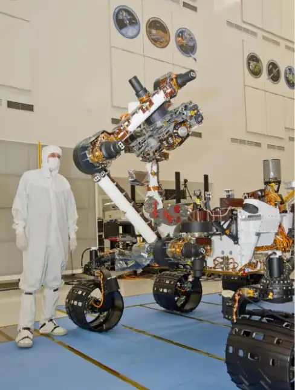
Strategy
We use mechanical energy conservation to analyze the problem. At the top of the hill, the wheel is at rest and has only potential energy. At the bottom of the basin, the wheel has rotational and translational kinetic energy, which must be equal to the initial potential energy by energy conservation. Since the wheel is rolling without slipping, we use the relation \(v_{\text{CM}}=r\omega\) to relate the translational variables to the rotational variables in the energy conservation equation. We then solve for the velocity. From Figure 11.8, we see that a hollow cylinder is a good approximation for the wheel, so we can use this moment of inertia to simplify the calculation.
Solution
Energy at the top of the basin equals energy at the bottom:
The known quantities are \(I_{\text{CM}}=mr^{2}{,}\:r=0.25\:\text{m,}\:\text{and}\:h=25.0\:\text{m}\).
We rewrite the energy conservation equation eliminating \(\omega\) by using \(\omega=\frac{v_{\text{CM}}}{r}.\) We have
or
On Mars, the acceleration of gravity is \(3.71\:{\:\text{m/s}}^{2},\) which gives the magnitude of the velocity at the bottom of the basin as
Significance
This is a fairly accurate result considering that Mars has very little atmosphere, and the loss of energy due to air resistance would be minimal. The result also assumes that the terrain is smooth, such that the wheel wouldn’t encounter rocks and bumps along the way.
Also, in this example, the kinetic energy, or energy of motion, is equally shared between linear and rotational motion. If we look at the moments of inertia in Figure 10.20, we see that the hollow cylinder has the largest moment of inertia for a given radius and mass. If the wheels of the rover were solid and approximated by solid cylinders, for example, there would be more kinetic energy in linear motion than in rotational motion. This would give the wheel a larger linear velocity than the hollow cylinder approximation. Thus, the solid cylinder would reach the bottom of the basin faster than the hollow cylinder.
11.2 Angular Momentum¶
Learning Objectives
By the end of this section, you will be able to:
- Describe the vector nature of angular momentum
- Find the total angular momentum and torque about a designated origin of a system of particles
- Calculate the angular momentum of a rigid body rotating about a fixed axis
- Calculate the torque on a rigid body rotating about a fixed axis
- Use conservation of angular momentum in the analysis of objects that change their rotation rate
Why does Earth keep on spinning? What started it spinning to begin with? Why doesn’t Earth’s gravitational attraction bring the Moon crashing in toward Earth? And how does an ice skater manage to spin faster and faster simply by pulling her arms in? Why does she not have to exert a torque to spin faster?
Questions like these have answers based in angular momentum, the rotational analog to linear momentum. In this chapter, we first define and then explore angular momentum from a variety of viewpoints. First, however, we investigate the angular momentum of a single particle. This allows us to develop angular momentum for a system of particles and for a rigid body that is cylindrically symmetric.
Angular Momentum of a Single Particle¶
Figure 11.9 shows a particle at a position \(\mathbf{\vec{r}}\) with linear momentum \(\mathbf{\vec{p}}=m\mathbf{\vec{v}}\) with respect to the origin. Even if the particle is not rotating about the origin, we can still define an angular momentum in terms of the position vector and the linear momentum.
Angular Momentum of a Particle
The angular momentum \(\mathbf{\mathbf{\vec{l}}}\) of a particle is defined as the cross-product of \(\mathbf{\vec{r}}\) and \(\mathbf{\vec{p}}\), and is perpendicular to the plane containing \(\mathbf{\vec{r}}\) and \(\mathbf{\mathbf{\vec{p}}}:\)
![An x y z coordinate system is shown in which x points out of the page, y points to the right and z points up. The vector r points from the origin to a point in the x y plane, in the first quadrant. The vector points from the tip of the r vector, at an angle of theta counterclockwise from the r vector direction, as viewed from above. Both r and p vectors are in the x y plane. The vector l points up, and is perpendicular to the x y plane, consistent with the right hand rule. When the right hand has its fingers curling counterclockwise as viewed from above, the thumb points up, in the direction of l. We are also shown the components of the vector r parallel and perpendicular to the p vector. The vector r sub perpendicular is the projection of the r vector perpendicular to the p vector direction.](img/cnx-uphysics-11-02-singpart.webp)
The intent of choosing the direction of the angular momentum to be perpendicular to the plane containing \(\mathbf{\vec{r}}\) and \(\mathbf{\vec{p}}\) is similar to choosing the direction of torque to be perpendicular to the plane of \(\mathbf{\vec{r}}\:\text{and}\:\mathbf{\vec{F}},\) as discussed in Fixed-Axis Rotation. The magnitude of the angular momentum is found from the definition of the cross-product,
where \(\theta\) is the angle between \(\mathbf{\vec{r}}\) and \(\mathbf{\vec{p}}.\) The units of angular momentum are \(\text{kg}\cdot\text{m}^{2}\text{/}\text{s}\).
As with the definition of torque, we can define a lever arm \(r_{\perp}\) that is the perpendicular distance from the momentum vector \(\mathbf{\vec{p}}\) to the origin, \(r_{\perp}=r\:\sin\:\theta.\) With this definition, the magnitude of the angular momentum becomes
We see that if the direction of \(\mathbf{\vec{p}}\) is such that it passes through the origin, then \(\theta=0,\) and the angular momentum is zero because the lever arm is zero. In this respect, the magnitude of the angular momentum depends on the choice of origin.
If we take the time derivative of the angular momentum, we arrive at an expression for the torque on the particle:
Here we have used the definition of \(\mathbf{\vec{p}}\) and the fact that a vector crossed into itself is zero. From Newton’s second law, \(\frac{d\mathbf{\vec{p}}}{dt}=\displaystyle \sum\mathbf{\vec{F}},\) the net force acting on the particle, and the definition of the net torque, we can write
equation callout
Note the similarity with the linear result of Newton’s second law, \(\frac{d\mathbf{\vec{p}}}{dt}=\displaystyle \sum\mathbf{\vec{F}}\). The following problem-solving strategy can serve as a guideline for calculating the angular momentum of a particle.
Problem-Solving Strategy: Angular Momentum of a Particle
- Choose a coordinate system about which the angular momentum is to be calculated.
- Write down the radius vector to the point particle in unit vector notation.
- Write the linear momentum vector of the particle in unit vector notation.
- Take the cross product \(\mathbf{\vec{l}}=\mathbf{\vec{r}}\:\times\:\mathbf{\vec{p}}\) and use the right-hand rule to establish the direction of the angular momentum vector.
- See if there is a time dependence in the expression of the angular momentum vector. If there is, then a torque exists about the origin, and use \(\frac{d\mathbf{\vec{l}}}{dt}=\displaystyle \sum\mathbf{\vec{\tau}}\) to calculate the torque. If there is no time dependence in the expression for the angular momentum, then the net torque is zero.
Example 11.4 Angular Momentum and Torque on a Meteor
A meteor enters Earth’s atmosphere (Figure 11.10) and is observed by someone on the ground before it burns up in the atmosphere. The vector \(\mathbf{\vec{r}}=25\:\text{km}\mathbf{\hat{i}}+25\:\text{km}\mathbf{\hat{j}}\) gives the position of the meteor with respect to the observer. At the instant the observer sees the meteor, it has linear momentum \(\mathbf{\vec{p}}=15.0\:\text{kg}(-2.0\text{km}\text{/}\text{s}\mathbf{\hat{j}})\), and it is accelerating at a constant \(2.0\:\text{m}\text{/}\text{s}^{2}(-\mathbf{\hat{j}})\) along its path, which for our purposes can be taken as a straight line. (a) What is the angular momentum of the meteor about the origin, which is at the location of the observer? (b) What is the torque on the meteor about the origin?
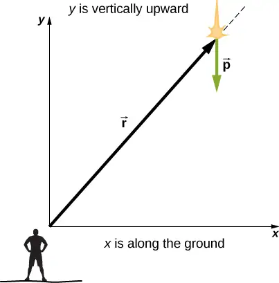
Strategy
We resolve the acceleration into x- and y-components and use the kinematic equations to express the velocity as a function of acceleration and time. We insert these expressions into the linear momentum and then calculate the angular momentum using the cross-product. Since the position and momentum vectors are in the xy-plane, we expect the angular momentum vector to be along the z-axis. To find the torque, we take the time derivative of the angular momentum.
Solution
The meteor is entering Earth’s atmosphere at an angle of \(90.0{}^{\circ}\) below the horizontal, so the components of the acceleration in the x- and y-directions are
We write the velocities using the kinematic equations.
a. The angular momentum is
At \(t=0\), the angular momentum of the meteor about the origin is
This is the instant that the observer sees the meteor.
b. To find the torque, we take the time derivative of the angular momentum. Taking the time derivative of \(\mathbf{\mathbf{\vec{l}}}\) as a function of time, which is the second equation immediately above, we have
Then, since \(\frac{d\mathbf{\vec{l}}}{dt}=\displaystyle \sum\mathbf{\vec{\tau}}\), we have
The units of torque are given as newton-meters, not to be confused with joules. As a check, we note that the lever arm is the x-component of the vector \(\mathbf{\overrightarrow{\text{r}}}\) in Figure 11.10 since it is perpendicular to the force acting on the meteor, which is along its path. By Newton’s second law, this force is
The lever arm is
Thus, the torque is
Significance
Since the meteor is accelerating downward toward Earth, its radius and velocity vector are changing. Therefore, since \(\mathbf{\vec{l}}=\mathbf{\vec{r}}\:\times\:\mathbf{\vec{p}}\), the angular momentum is changing as a function of time. The torque on the meteor about the origin, however, is constant, because the lever arm \({\mathbf{\vec{r}}}_{\perp}\) and the force on the meteor are constants. This example is important in that it illustrates that the angular momentum depends on the choice of origin about which it is calculated. The methods used in this example are also important in developing angular momentum for a system of particles and for a rigid body.
Check Your Understanding
A proton spiraling around a magnetic field executes circular motion in the plane of the paper, as shown below. The circular path has a radius of 0.4 m and the proton has velocity \(4.0\:\times\:{10}^{6}\:\text{m}\text{/}\text{s}\). What is the angular momentum of the proton about the origin?
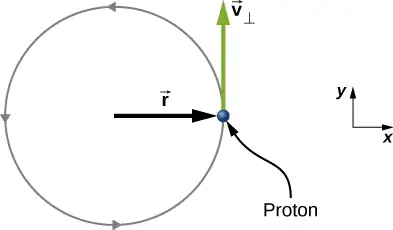
Answer
From the figure, we see that the cross product of the radius vector with the momentum vector gives a vector directed out of the page. Inserting the radius and momentum into the expression for the angular momentum, we have
\(\mathbf{\vec{l}}=\mathbf{\vec{r}}\:\times\:\mathbf{\vec{p}}=(0.4\:\text{m}\mathbf{\hat{i}}\text{)}\:\times\:(1.67\:\times\:{10}^{-27}\:\text{kg}(4.0\:\times\:{10}^{6}\:\text{m}\text{/}\text{s})\mathbf{\hat{j}})=2.7\:\times\:{10}^{-21}\:\text{kg}\cdot\text{m}^{2}\text{/}\text{s}\mathbf{\hat{k}}\)
Angular Momentum of a System of Particles¶
The angular momentum of a system of particles is important in many scientific disciplines, one being astronomy. Consider a spiral galaxy, a rotating island of stars like our own Milky Way. The individual stars can be treated as point particles, each of which has its own angular momentum. The vector sum of the individual angular momenta give the total angular momentum of the galaxy. In this section, we develop the tools with which we can calculate the total angular momentum of a system of particles.
In the preceding section, we introduced the angular momentum of a single particle about a designated origin. The expression for this angular momentum is \(\mathbf{\vec{l}}=\mathbf{\vec{r}}\:\times\:\mathbf{\vec{p}},\) where the vector \(\mathbf{\vec{r}}\) is from the origin to the particle, and \(\mathbf{\vec{p}}\) is the particle’s linear momentum. If we have a system of N particles, each with position vector from the origin given by \({\mathbf{\vec{r}}}_{i}\) and each having momentum \({\mathbf{\vec{p}}}_{i},\) then the total angular momentum of the system of particles about the origin is the vector sum of the individual angular momenta about the origin. That is,
equation callout
Similarly, if particle i is subject to a net torque \({\vec{\tau}}_{i}\) about the origin, then we can find the net torque about the origin due to the system of particles by differentiating Equation 11.7:
The sum of the individual torques produces a net external torque on the system, which we designate \(\displaystyle \sum\mathbf{\vec{\tau}}.\) Thus,
equation callout
Equation 11.8 states that the rate of change of the total angular momentum of a system is equal to the net external torque acting on the system when both quantities are measured with respect to a given origin. Equation 11.8 can be applied to any system that has net angular momentum, including rigid bodies, as discussed in the next section.
Example 11.5 Angular Momentum of Three Particles
Referring to Figure 11.11(a), determine the total angular momentum due to the three particles about the origin. (b) What is the rate of change of the angular momentum?
![Three particles in the x y plane with different position and momentum vectors are shown. The x and y axes show position in meters and have a range of -4.0 to 4.0 meters. Particle 1 is at x=-2.0 meters and y=1.0 meters, m sub 1 equals 2.0 kilograms, v sub 1 is 4.0 j hat meters per second, upward, and F sub 1 is -6.0 i hat Newtons to the left. Particle 2 is at x=4.0 meters and y=1.0 meters, m sub 2 equals 4.0 kilograms, v sub 2 is 5.0 i hat meters per second, to the right, and F sub 2 is 10.0 j hat Newtons up. Particle 3 is at x=2.0 meters and y=-2.0 meters, m sub 3 equals 1.0 kilograms, v sub 3 is 3.0 i hat meters per second, to the right, and F sub 3 is -8.0 j hat Newtons down.](img/cnx-uphysics-11-02-syspart.webp)
Strategy
Write down the position and momentum vectors for the three particles. Calculate the individual angular momenta and add them as vectors to find the total angular momentum. Then do the same for the torques.
Solution
a. Particle 1: \({\mathbf{\vec{r}}}_{1}=-2.0\:\text{m}\mathbf{\hat{i}}+1.0\:\text{m}\mathbf{\hat{j}},\;{\mathbf{\vec{p}}}_{1}=2.0\:\text{kg}(4.0\:\text{m}\text{/}\text{s}\mathbf{\hat{j}})=8.0\:\text{kg}\cdot\text{m}\text{/}\text{s}\mathbf{\hat{j}},\)
Particle 2: \({\mathbf{\vec{r}}}_{2}=4.0\:\text{m}\mathbf{\hat{i}}+1.0\:\text{m}\mathbf{\hat{j}},\;{\mathbf{\vec{p}}}_{2}=4.0\:\text{kg}(5.0\:\text{m}\text{/}\text{s}\mathbf{\hat{i}})=20.0\:\text{kg}\cdot\text{m}\text{/}\text{s}\mathbf{\hat{i}}\),
Particle 3: \({\mathbf{\vec{r}}}_{3}=2.0\:\text{m}\mathbf{\hat{i}}-2.0\:\text{m}\mathbf{\hat{j}},\;{\mathbf{\vec{p}}}_{3}=1.0\:\text{kg}(3.0\:\text{m}\text{/}\text{s}\mathbf{\hat{i}})=3.0\:\text{kg}\cdot\text{m}\text{/}\text{s}\mathbf{\hat{i}}\),
We add the individual angular momenta to find the total about the origin:
b. The individual forces and lever arms are
Therefore:
Significance
This example illustrates the superposition principle for angular momentum and torque of a system of particles. Care must be taken when evaluating the radius vectors \({\mathbf{\vec{r}}}_{i}\) of the particles to calculate the angular momenta, and the lever arms, \({\mathbf{\vec{r}}}_{i\perp}\) to calculate the torques, as they are completely different quantities.
Angular Momentum of a Rigid Body¶
We have investigated the angular momentum of a single particle, which we generalized to a system of particles. Now we can use the principles discussed in the previous section to develop the concept of the angular momentum of a rigid body. Celestial objects such as planets have angular momentum due to their spin and orbits around stars. In engineering, anything that rotates about an axis carries angular momentum, such as flywheels, propellers, and rotating parts in engines. Knowledge of the angular momenta of these objects is crucial to the design of the system in which they are a part.
To develop the angular momentum of a rigid body, we model a rigid body as being made up of small mass segments, \(\Delta m_{i}.\) In Figure 11.12, a rigid body is constrained to rotate about the z-axis with angular velocity \(\omega\). All mass segments that make up the rigid body undergo circular motion about the z-axis with the same angular velocity. Part (a) of the figure shows mass segment \(\Delta m_{i}\) with position vector \({\mathbf{\vec{r}}}_{i}\) from the origin and radius \(R_{i}\) to the z-axis. The magnitude of its tangential velocity is \(v_{i}=R_{i}\omega\). Because the vectors \({\mathbf{\vec{v}}}_{i}\:\text{and}\:{\mathbf{\vec{r}}}_{i}\) are perpendicular to each other, the magnitude of the angular momentum of this mass segment is
![Figure a shows a door-knob shaped object and an x y z coordinate system. The object is arranged vertically and centered on the z axis, with the wide knob at the top. The object is rotating about the z axis, counterclockwise as viewed from above, with angular velocity omega. A small part of the object is highlighted. This mass segment, labeled Delta m sub i, is located at vector r sub i, moves with velocity vector v sub i, and traces a counterclockwise circle of radius R sub i. The vector r sub i extends from the origin to the mass segment and makes an angle of theta sub i with the z axis. The vector v sub i is tangent to the circle traced by the mass segment. Figure b shows the x y coordinate system and the mass segment. Vectors r sub i and v sub i are shown again, as is the angle theta sub i between the vector r sub i and the z axis. The angular momentum vector of the mass segment, vector l sub i, is also shown. The vector l sub i is perpendicular to both r and v, as given by the right hand rule, and has a z component upward, shown on the diagram and labeled l sub i z. The remaining side of the right triangle whose hypotenuse is l sub i and vertical side is l sub i z is shown as a dashed line. The angle adjacent to this side, and opposite the vertical side l sub i z, is theta sub i.](img/cnx-uphysics-11-02-rigidbody.webp)
Using the right-hand rule, the angular momentum vector points in the direction shown in part (b). The sum of the angular momenta of all the mass segments contains components both along and perpendicular to the axis of rotation. Every mass segment has a perpendicular component of the angular momentum that will be cancelled by the perpendicular component of an identical mass segment on the opposite side of the rigid body, because it is cylindrically symmetric. Thus, the component along the axis of rotation is the only component that gives a nonzero value when summed over all the mass segments. From part (b), the component of \({\mathbf{\vec{l}}}_{i}\) along the axis of rotation is
The net angular momentum of the rigid body along the axis of rotation is
The summation \({\displaystyle \sum_{i}\Delta m_{i}(R_{i})}^{2}\) is simply the moment of inertia I of the rigid body about the axis of rotation. For a thin hoop rotating about an axis perpendicular to the plane of the hoop, all of the \(R_{i}\)’s are equal to R so the summation reduces to \(R^{2}\displaystyle \sum_{i}\Delta m_{i}=mR^{2},\) which is the moment of inertia for a thin hoop found in Figure 10.20. Thus, the magnitude of the angular momentum along the axis of rotation of a rigid body rotating with angular velocity \(\omega\) about the axis is
equation callout
This equation is analogous to the magnitude of the linear momentum \(p=mv\). The direction of the angular momentum vector is directed along the axis of rotation given by the right-hand rule.
Example 11.6 Angular Momentum of a Robot Arm
A robot arm on a Mars rover like Curiosity shown in Figure 11.8 is 1.0 m long and has forceps at the free end to pick up rocks. The mass of the arm is 2.0 kg and the mass of the forceps is 1.0 kg. See Figure 11.13. The robot arm and forceps move from rest to \(\omega=0.1\pi\:\text{rad}\text{/}\text{s}\) in 0.1 s. It rotates down and picks up a Mars rock that has mass 1.5 kg. The axis of rotation is the point where the robot arm connects to the rover. (a) What is the angular momentum of the robot arm by itself about the axis of rotation after 0.1 s when the arm has stopped accelerating? (b) What is the angular momentum of the robot arm when it has the Mars rock in its forceps and is rotating upwards? (c) When the arm does not have a rock in the forceps, what is the torque about the point where the arm connects to the rover when it is accelerating from rest to its final angular velocity?
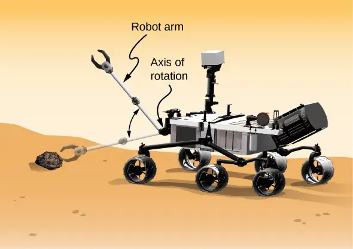
Strategy
We use Equation 11.9 to find angular momentum in the various configurations. When the arm is rotating downward, the right-hand rule gives the angular momentum vector directed out of the page, which we will call the positive z-direction. When the arm is rotating upward, the right-hand rule gives the direction of the angular momentum vector into the page or in the negative z-direction. The moment of inertia is the sum of the individual moments of inertia. The arm can be approximated with a solid rod, and the forceps and Mars rock can be approximated as point masses located at a distance of 1 m from the origin. For part (c), we use Newton’s second law of motion for rotation to find the torque on the robot arm.
Solution
a. Writing down the individual moments of inertia, we have
Robot arm: \(I_{\text{R}}=\frac{1}{3}m_{\text{R}}r^{2}=\frac{1}{3}(2.00\:\text{kg}){(1.00\:\text{m})}^{2}=\frac{2}{3}\,\text{kg}\cdot\text{m}^{2}.\)
Forceps: \(I_{\text{F}}=m_{\text{F}}r^{2}=(1.0\:\text{kg}){(1.0\:\text{m})}^{2}=1.0\:\text{kg}\cdot\text{m}^{2}.\)
Mars rock: \(I_{\text{MR}}=m_{\text{MR}}r^{2}=(1.5\:\text{kg}){(1.0\:\text{m})}^{2}=1.5\:\text{kg}\cdot\text{m}^{2}.\)
Therefore, without the Mars rock, the total moment of inertia is
and the magnitude of the angular momentum is
The angular momentum vector is directed out of the page in the \(\mathbf{\hat{k}}\) direction since the robot arm is rotating counterclockwise.
b. We must include the Mars rock in the calculation of the moment of inertia, so we have
and
Now the angular momentum vector is directed into the page in the \(-\mathbf{\hat{k}}\) direction, by the right-hand rule, since the robot arm is now rotating clockwise.
c. We find the torque when the arm does not have the rock by taking the derivative of the angular momentum using Equation 11.8\(\frac{d\mathbf{\vec{L}}}{dt}=\displaystyle \sum\mathbf{\vec{\tau}}.\) But since \(L=I\omega\), and understanding that the direction of the angular momentum and torque vectors are along the axis of rotation, we can suppress the vector notation and find
which is Newton’s second law for rotation. Since \(\alpha=\frac{0.1\pi\:\text{rad}\text{/}\text{s}}{0.1\:\text{s}}=\pi\:\text{rad}\text{/}\text{s}^{2}\), we can calculate the net torque:
Significance
The angular momentum in (a) is less than that of (b) due to the fact that the moment of inertia in (b) is greater than (a), while the angular velocity is the same.
Check Your Understanding
Which has greater angular momentum: a solid sphere of mass m rotating at a constant angular frequency \(\omega_{0}\) about the z-axis, or a solid cylinder of same mass and rotation rate about the z-axis?
Answer
\(I_{\text{sphere}}=\frac{2}{5}mr^{2},\;I_{\text{cylinder}}=\frac{1}{2}mr^{2}\); Taking the ratio of the angular momenta, we have:
\(\frac{L_{\text{cylinder}}}{L_{\text{sphere}}}=\frac{I_{\text{cylinder}}\omega_{0}}{I_{\text{sphere}}\omega_{0}}=\frac{\frac{1}{2}mr^{2}}{\frac{2}{5}mr^{2}}=\frac{5}{4}\). Thus, the cylinder has \(25\%\) more angular momentum. This is because the cylinder has more mass distributed farther from the axis of rotation.
Media
Visit the University of Colorado’s Interactive Simulation of Angular Momentum to learn more about angular momentum.
11.3 Conservation of Angular Momentum¶
Learning Objectives
By the end of this section, you will be able to:
- Apply conservation of angular momentum to determine the angular velocity of a rotating system in which the moment of inertia is changing
- Explain how the rotational kinetic energy changes when a system undergoes changes in both moment of inertia and angular velocity
So far, we have looked at the angular momentum of systems consisting of point particles and rigid bodies. We have also analyzed the torques involved, using the expression that relates the external net torque to the change in angular momentum, Equation 11.8. Examples of systems that obey this equation include a freely spinning bicycle tire that slows over time due to torque arising from friction, or the slowing of Earth’s rotation over millions of years due to frictional forces exerted on tidal deformations.
However, suppose there is no net external torque on the system, \(\displaystyle \sum\mathbf{\vec{\tau}}=0.\) In this case, Equation 11.8 becomes the law of conservation of angular momentum.
Law of Conservation of Angular Momentum
The angular momentum of a system of particles around a point in a fixed inertial reference frame is conserved if there is no net external torque around that point:
or
Note that the total angular momentum \(\mathbf{\vec{L}}\) is conserved. Any of the individual angular momenta can change as long as their sum remains constant. This law is analogous to linear momentum being conserved when the external force on a system is zero.
As an example of conservation of angular momentum, Figure 11.14 shows an ice skater executing a spin. The net torque on her is very close to zero because there is relatively little friction between her skates and the ice. Also, the friction is exerted very close to the pivot point. Both \(|\mathbf{\vec{F}}|\:\text{and}\:|\mathbf{\vec{r}}|\) are small, so \(|\mathbf{\vec{\tau}}|\) is negligible. Consequently, she can spin for quite some time. She can also increase her rate of spin by pulling her arms and legs in. Why does pulling her arms and legs in increase her rate of spin? The answer is that her angular momentum is constant, so that
or
where the primed quantities refer to conditions after she has pulled in her arms and reduced her moment of inertia. Because \(I'\) is smaller, the angular velocity \(\omega'\) must increase to keep the angular momentum constant.
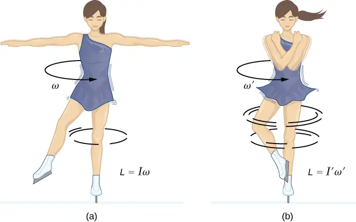
It is interesting to see how the rotational kinetic energy of the skater changes when she pulls her arms in. Her initial rotational energy is
whereas her final rotational energy is
Since \(I'\omega'=I\omega,\) we can substitute for \(\omega'\) and find
Because her moment of inertia has decreased, \(I' \lt I,\) her final rotational kinetic energy has increased. The source of this additional rotational kinetic energy is the work required to pull her arms inward. Note that the skater’s arms do not move in a perfect circle—they spiral inward. This work causes an increase in the rotational kinetic energy, while her angular momentum remains constant. Since she is in a frictionless environment, no energy escapes the system. Thus, if she were to extend her arms to their original positions, she would rotate at her original angular velocity and her kinetic energy would return to its original value.
The solar system is another example of how conservation of angular momentum works in our universe. Our solar system was born from a huge cloud of gas and dust that initially had rotational energy. Gravitational forces caused the cloud to contract, and the rotation rate increased as a result of conservation of angular momentum (Figure 11.15).
![An illustration of the formation of the solar system from a cloud of gas and dust. At first, the gas cloud is rotating with angular velocity omega and has angular momentum L. It forms a fairly continuous disc in the plane of rotation. Later, the disc is rotating with angular velocity omega prime but still has angular momentum L. The disc starts to break up into concentric rings. The gaps between the rings grow. Eventually, the gas in the rings forms a star in the center and planets whose orbits trace the rings from which they came. In all cases, the angular velocity is in the same direction as that of the original gas cloud and the angular momentum is L.](img/cnx-uphysics-11-03-solarsy.webp)
We continue our discussion with an example that has applications to engineering.
Example 11.7 Coupled Flywheels
A flywheel rotates without friction at an angular velocity \(\omega_{0}=600\:\text{rev}\text{/}\min\) on a frictionless, vertical shaft of negligible rotational inertia. A second flywheel, which is at rest and has a moment of inertia three times that of the rotating flywheel, is dropped onto it (Figure 11.16). Because friction exists between the surfaces, the flywheels very quickly reach the same rotational velocity, after which they spin together. (a) Use the law of conservation of angular momentum to determine the angular velocity \(\omega\) of the combination. (b) What fraction of the initial kinetic energy is lost in the coupling of the flywheels?
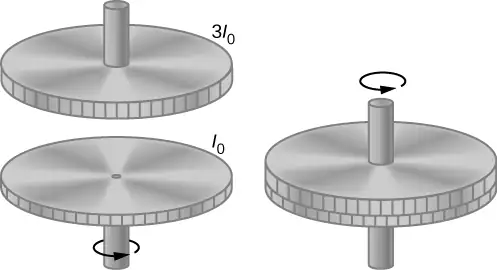
Strategy
Part (a) is straightforward to solve for the angular velocity of the coupled system. We use the result of (a) to compare the initial and final kinetic energies of the system in part (b).
Solution
a. No external torques act on the system. The force due to friction produces an internal torque, which does not affect the angular momentum of the system. Therefore conservation of angular momentum gives
b. Before contact, only one flywheel is rotating. The rotational kinetic energy of this flywheel is the initial rotational kinetic energy of the system, \(\frac{1}{2}I_{0}\omega_{0}^{2}\). The final kinetic energy is\(\frac{1}{2}(4I_{0})\omega^{2}=\frac{1}{2}(4I_{0}){\left( \frac{\omega_{0}}{4} \right)}^{2}=\frac{1}{8}I_{0}\omega_{0}^{2}.\)
Therefore, the ratio of the final kinetic energy to the initial kinetic energy is
Thus, 3/4 of the initial kinetic energy is lost to the coupling of the two flywheels.
Significance
Since the rotational inertia of the system increased, the angular velocity decreased, as expected from the law of conservation of angular momentum. In this example, we see that the final kinetic energy of the system has decreased, as energy is lost to the coupling of the flywheels. Compare this to the example of the skater in Figure 11.14 doing work to bring her arms inward and adding rotational kinetic energy.
Check Your Understanding
A merry-go-round at a playground is rotating at 4.0 rev/min. Three children jump on and increase the moment of inertia of the merry-go-round/children rotating system by \(25\%\). What is the new rotation rate?
Answer
Using conservation of angular momentum, we have
\(I(4.0\:\text{rev/min})=1.25I\omega_{\text{f}},\;\omega_{\text{f}}=\frac{1.0}{1.25}(4.0\:\text{rev}\text{/}\min)=3.2\:\text{rev}\text{/}\min\)
Example 11.8 Dismount from a High Bar
An 80.0-kg gymnast dismounts from a high bar. He starts the dismount at full extension, then tucks to complete a number of revolutions before landing. His moment of inertia when fully extended can be approximated as a rod of length 1.8 m and when in the tuck a rod of half that length. If his rotation rate at full extension is 1.0 rev/s and he enters the tuck when his center of mass is at 3.0 m height moving horizontally to the floor, how many revolutions can he execute if he comes out of the tuck at 1.8 m height? See Figure 11.17.
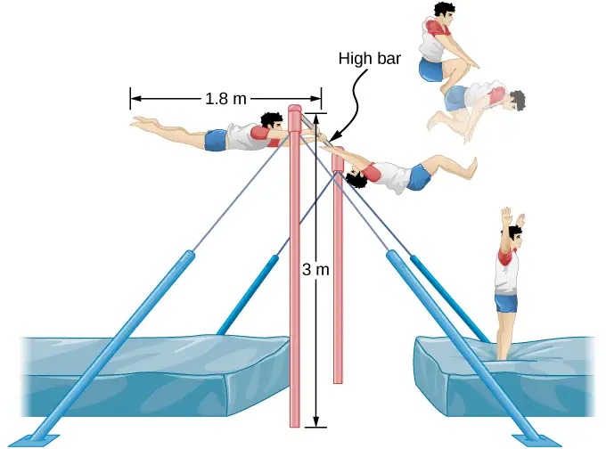
Strategy
Using conservation of angular momentum, we can find his rotation rate when in the tuck. Using the equations of kinematics, we can find the time interval from a height of 3.0 m to 1.8 m. Since he is moving horizontally with respect to the ground, the equations of free fall simplify. This will allow the number of revolutions that can be executed to be calculated. Since we are using a ratio, we can keep the units as rev/s and don’t need to convert to radians/s.
Solution
The moment of inertia at full extension is \(I_{0}=\frac{1}{12}mL^{2}=\frac{1}{12}80.0\:\text{kg}(1{.8\:\text{m})}^{2}=21.6\:\text{kg}\cdot\text{m}^{2}\).
The moment of inertia in the tuck is \(I_{\text{f}}=\frac{1}{12}mL_{\text{f}}^{2}=\frac{1}{12}80.0\:\text{kg}(0{.9\:\text{m})}^{2}=5.4\:\text{kg}\cdot\text{m}^{2}\).
Conservation of angular momentum: \(I_{\text{f}}\omega_{\text{f}}=I_{0}\omega_{0}\Rightarrow\omega_{\text{f}}=\frac{I_{0}\omega_{0}}{I_{\text{f}}}=\frac{21.6\:\text{kg}\cdot\text{m}^{2}(1.0\:\text{rev}\text{/}\text{s})}{5.4\:\text{kg}\cdot\text{m}^{2}}=4.0\:\text{rev}\text{/}\text{s}\).
Time interval in the tuck: \(t=\sqrt{\frac{2h}{g}}=\sqrt{\frac{2(3.0-1.8)\text{m}}{9.8\:\text{m}\text{/}\text{s}}}=0.5\:\text{s}\).
In 0.5 s, he will be able to execute two revolutions at 4.0 rev/s.
Significance
Note that the number of revolutions he can complete will depend on how long he is in the air. In the problem, he is exiting the high bar horizontally to the ground. He could also exit at an angle with respect to the ground, giving him more or less time in the air depending on the angle, positive or negative, with respect to the ground. Gymnasts must take this into account when they are executing their dismounts.
Example 11.9 Conservation of Angular Momentum of a Collision
A bullet of mass \(m=2.0\:\text{g}\) is moving horizontally with a speed of \(500.0\:\text{m}\text{/}\text{s}.\) The bullet strikes and becomes embedded in the edge of a solid disk of mass \(M=3.2\:\text{kg}\) and radius \(R=0.5\:\text{m}.\) The cylinder is free to rotate around its axis and is initially at rest (Figure 11.18). What is the angular velocity of the disk immediately after the bullet is embedded?
![Illustrations of a bullet before and after striking a disk. On the left is the before illustration. The bullet is travelling to the left at 500 meters per second, toward the front edge of a horizontal disk of radius R. The vertical axis through the center of the disc is shown as a vertical line connecting points A above and A prime below the center. On the right is the after illustration. The bullet is embedded in the edge of the disk, which is rotating about the vertical axis through the center. The rotation is counterclockwise as viewed from above.](img/cnx-uphysics-11-03-disk.webp)
Strategy
For the system of the bullet and the cylinder, no external torque acts along the vertical axis through the center of the disk. Thus, the angular momentum along this axis is conserved. The initial angular momentum of the bullet is \(mvR\), which is taken about the rotational axis of the disk the moment before the collision. The initial angular momentum of the cylinder is zero. Thus, the net angular momentum of the system is \(mvR\). Since angular momentum is conserved, the initial angular momentum of the system is equal to the angular momentum of the bullet embedded in the disk immediately after impact.
Solution
The initial angular momentum of the system is
The moment of inertia of the system with the bullet embedded in the disk is
The final angular momentum of the system is
Thus, by conservation of angular momentum, \(L_{i}=L_{f}\) and
Solving for \(\omega_{f},\)
Significance
The system is composed of both a point particle and a rigid body. Care must be taken when formulating the angular momentum before and after the collision. Just before impact the angular momentum of the bullet is taken about the rotational axis of the disk.
11.4 Precession of a Gyroscope¶
Learning Objectives
By the end of this section, you will be able to:
- Describe the physical processes underlying the phenomenon of precession
- Calculate the precessional angular velocity of a gyroscope
Figure 11.19 shows a gyroscope, defined as a spinning disk in which the axis of rotation is free to assume any orientation. When spinning, the orientation of the spin axis is unaffected by the orientation of the body that encloses it. The body or vehicle enclosing the gyroscope can be moved from place to place and the orientation of the spin axis will remain the same. This makes gyroscopes very useful in navigation, especially where magnetic compasses can’t be used, such as in piloted and unpiloted spacecrafts, intercontinental ballistic missiles, unmanned aerial vehicles, and satellites like the Hubble Space Telescope.
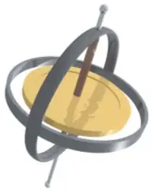
We illustrate the precession of a gyroscope with an example of a top in the next two figures. If the top is placed on a flat surface near the surface of Earth at an angle to the vertical and is not spinning, it will fall over, due to the force of gravity producing a torque acting on its center of mass. This is shown in Figure 11.20(a). However, if the top is spinning on its axis, rather than topple over due to this torque, it precesses about the vertical, shown in part (b) of the figure. This is due to the torque on the center of mass, which provides the change in angular momentum.
![Figure a: An x y z coordinate system is show, with x out of the page, y to the right, and z up. The origin is point O. A top is shown with its point at the origin and its axis tilted away from the vertical z axis. The axis of the top is the line O O prime. The vector r extends from the origin to the center of the mass, labeled as C M, of the top. The force M g acts downward at the center of mass. The torque about the origin is equal to vector r crossed with M vector g. This torque is a vector in the x y plane, perpendicular to the r vector. Figure b: The x y z coordinate and the top are shown. The top is again tilted away from the z axis and is spinning rapidly counterclockwise about the O O prime axis as viewed from above. The precession of the top traces a counterclockwise circle as viewed from above, centered on the z axis. The cone swept by the precession of the top is indicated using dashed lines.](img/cnx-uphysics-11-04-top.webp)
Figure 11.21 shows the forces acting on a spinning top. The torque produced is perpendicular to the angular momentum vector. This changes the direction of the angular momentum vector \(\mathbf{\vec{L}}\) according to \(d\mathbf{\vec{L}}=\mathbf{\vec{\tau}}dt,\) but not its magnitude. The top precesses around a vertical axis, since the torque is always horizontal and perpendicular to \(\mathbf{\vec{L}}\). If the top is not spinning, it acquires angular momentum in the direction of the torque, and it rotates around a horizontal axis, falling over just as we would expect.
![An x y z coordinate system is show, with x out of the page, y to the right, and z up. The origin is point O. A top is shown with its point at the origin and its axis tilted by an angle theta away from the vertical z axis, clockwise as we view it. The vector r extends from the origin to the center of the mass, labeled as C M, of the top. The force M g acts downward at the center of mass. The torque, tau, about the origin is equal to vector r crossed with M vector g. This torque is a vector in the x y plane, perpendicular to the r vector, into the page. The angular velocity, omega, of the top is counterclockwise as viewed from above. The angular momentum, L, is in the same direction as the r vector, tilted up along the axis of the top. The circle traced by the precession of the top is shown as a horizontal circle above the top. The precession angular velocity omega sub p is counterclockwise as viewed from above. The radius of the precession circle is L sine theta. The vector d L is tangent to the circle, pointing into the page, and is equal to vector tau d t. The triangle formed L sine theta and d L is shown, and the angle across from d L is labeled as d phi.](img/cnx-uphysics-11-04-precess.webp)
We can experience this phenomenon first hand by holding a spinning bicycle wheel and trying to rotate it about an axis perpendicular to the spin axis. As shown in Figure 11.22, the person applies forces perpendicular to the spin axis in an attempt to rotate the wheel, but instead, the wheel axis starts to change direction to her left due to the applied torque.
![In figure a, a woman, facing the viewer, is holding a spinning bike wheel of radius r by the axle. The wheel is so that the angular velocity omega and angular momentum L are along the axis of rotation of the wheel, to her left (the viewer’s right.) That is, the motion of the wheel is such that the bottom of the wheel is moving toward her (into the page.) The direction of the force F applied by her left hand is shown downward and that by her right hand in upward direction. The torque tau is toward her (into the page.) In figure b, addition of two vectors L and delta-L, which is parallel to torque tau, is shown. The resultant of the two vectors is labeled as L plus delta L. The direction of rotation, omega sub p, is counterclockwise as viewed from above.](img/cnx-uphysics-11-04-bicycle.webp)
We all know how easy it is for a bicycle to tip over when sitting on it at rest. But when riding the bicycle at a good pace, tipping it over involves changing the angular momentum vector of the spinning wheels.
Media
View the video on gyroscope precession for a complete demonstration of precession of the bicycle wheel.
Also, when a spinning disk is put in a box such as a Blu-Ray player, try to move it. It is easy to translate the box in a given direction but difficult to rotate it about an axis perpendicular to the axis of the spinning disk, since we are putting a torque on the box that will cause the angular momentum vector of the spinning disk to precess.
We can calculate the precession rate of the top in Figure 11.21. From Figure 11.21, we see that the magnitude of the torque is
Thus,
The angle the top precesses through in time dt is
The precession angular velocity is \(\omega_{P}=\frac{d\phi}{dt}\) and from this equation we see that
equation callout
In this derivation, we assumed that \(\omega_{P}\ll\omega,\) that is, that the precession angular velocity is much less than the angular velocity of the gyroscope disk. The precession angular velocity adds a small component to the angular momentum along the z-axis. This is seen in a slight bob up and down as the gyroscope precesses, referred to as nutation.
Earth itself acts like a gigantic gyroscope. Its angular momentum is along its axis and currently points at Polaris, the North Star. But Earth is slowly precessing (once in about 26,000 years) due to the torque of the Sun and the Moon on its nonspherical shape.
Example 11.10 Period of Precession
A gyroscope spins with its tip on the ground and is spinning with negligible frictional resistance. The disk of the gyroscope has mass 0.3 kg and is spinning at 20 rev/s. Its center of mass is 5.0 cm from the pivot and the radius of the disk is 5.0 cm. What is the precessional period of the gyroscope?
Strategy
We use Equation 11.12 to find the precessional angular velocity of the gyroscope. This allows us to find the period of precession.
Solution
The moment of inertia of the disk is
The angular velocity of the disk is
We can now substitute in Equation 11.12. The precessional angular velocity is
The precessional period of the gyroscope is
Significance
The precessional angular frequency of the gyroscope, 3.12 rad/s, or about 0.5 rev/s, is much less than the angular velocity 20 rev/s of the gyroscope disk. Therefore, we don’t expect a large component of the angular momentum to arise due to precession, and Equation 11.12 is a good approximation of the precessional angular velocity.
Check Your Understanding
A top has a precession frequency of 5.0 rad/s on Earth. What is its precession frequency on the Moon?
Answer
The Moon’s gravity is 1/6 that of Earth’s. By examining Equation 11.12, we see that the top’s precession frequency is linearly proportional to the acceleration of gravity. All other quantities, mass, moment of inertia, and spin rate are the same on the Moon. Thus, the precession frequency on the Moon is
\(\omega_{P}\text{(Moon)}=\frac{1}{6}\omega_{P}\text{(Earth)}=\frac{1}{6}(5.0\:\text{rad}\text{/}\text{s})=0.83\:\text{rad}\text{/}\text{s}.\)
Chapter Review¶
Key Terms¶
- angular momentum
- rotational analog of linear momentum, found by taking the product of moment of inertia and angular velocity
- law of conservation of angular momentum
- angular momentum is conserved, that is, the initial angular momentum is equal to the final angular momentum when no external torque is applied to the system
- precession
- circular motion of the pole of the axis of a spinning object around another axis due to a torque
- rolling motion
- combination of rotational and translational motion with or without slipping
Key Equations¶
| Velocity of center of mass of rolling object | \(v_{\text{CM}}=R\omega\) |
| Acceleration of center of mass of rolling object | \(a_{\text{CM}}=R\alpha\) |
| Displacement of center of mass of rolling object | \(d_{\text{CM}}=R\theta\) |
| Acceleration of an object rolling without slipping | \(a_{\text{CM}}=\frac{mg\:\sin\:\theta}{m+(I_{\text{CM}}\text{/}r^{2})}\) |
| Angular momentum | \(\mathbf{\vec{l}}=\mathbf{\vec{r}}\:\times\:\mathbf{\vec{p}}\) |
| Derivative of angular momentum equals torque | \(\frac{d\mathbf{\vec{l}}}{dt}=\displaystyle \sum\mathbf{\vec{\tau}}\) |
| Angular momentum of a system of particles | \(\mathbf{\vec{L}}={\mathbf{\vec{l}}}_{1}+{\mathbf{\vec{l}}}_{2}+\cdots+{\mathbf{\vec{l}}}_{N}\) |
| For a system of particles, derivative of angular momentum equals torque |
\(\frac{d\mathbf{\vec{L}}}{dt}=\displaystyle \sum\mathbf{\vec{\tau}}\) |
| Angular momentum of a rotating rigid body | \(L=I\omega\) |
| Conservation of angular momentum | \(\frac{d\mathbf{\vec{L}}}{dt}=0\) |
| Conservation of angular momentum | \(\mathbf{\vec{L}}={\mathbf{\vec{l}}}_{1}+{\mathbf{\vec{l}}}_{2}+\cdots+{\mathbf{\vec{l}}}_{N}=\text{constant}\) |
| Precessional angular velocity | \(\omega_{P}=\frac{rMg}{I\omega}\) |
Summary¶
11.1 Rolling Motion¶
- In rolling motion without slipping, a static friction force is present between the rolling object and the surface. The relations \(v_{\text{CM}}=R\omega,a_{\text{CM}}=R\alpha,\:\text{and}\:d_{\text{CM}}=R\theta\) all apply, such that the linear velocity, acceleration, and distance of the center of mass are the angular variables multiplied by the radius of the object.
- In rolling motion with slipping, a kinetic friction force arises between the rolling object and the surface. In this case, \(v_{\text{CM}}\neq R\omega,a_{\text{CM}}\neq R\alpha,\:\text{and}\:d_{\text{CM}}\neq R\theta\).
- Energy conservation can be used to analyze rolling motion. Energy is conserved in rolling motion without slipping. Energy is not conserved in rolling motion with slipping due to the heat generated by kinetic friction.
11.2 Angular Momentum¶
- The angular momentum \(\mathbf{\vec{l}}=\mathbf{\vec{r}}\:\times\:\mathbf{\vec{p}}\) of a single particle about a designated origin is the vector product of the position vector in the given coordinate system and the particle’s linear momentum.
- The angular momentum \(\mathbf{\vec{l}}=\displaystyle \sum_{i}{\mathbf{\vec{l}}}_{i}\) of a system of particles about a designated origin is the vector sum of the individual momenta of the particles that make up the system.
- The net torque on a system about a given origin is the time derivative of the angular momentum about that origin: \(\frac{d\mathbf{\vec{L}}}{dt}=\displaystyle \sum\mathbf{\vec{\tau}}\).
- A rigid rotating body has angular momentum \(L=I\omega\) directed along the axis of rotation. The time derivative of the angular momentum \(\frac{dL}{dt}=\displaystyle \sum\tau\) gives the net torque on a rigid body and is directed along the axis of rotation.
11.3 Conservation of Angular Momentum¶
- In the absence of external torques, a system’s total angular momentum is conserved. This is the rotational counterpart to linear momentum being conserved when the external force on a system is zero.
- For a rigid body that changes its angular momentum in the absence of a net external torque, conservation of angular momentum gives \(I_{f}\omega_{f}=I_{i}\omega_{i}\). This equation says that the angular velocity is inversely proportional to the moment of inertia. Thus, if the moment of inertia decreases, the angular velocity must increase to conserve angular momentum.
- Systems containing both point particles and rigid bodies can be analyzed using conservation of angular momentum. The angular momentum of all bodies in the system must be taken about a common axis.
11.4 Precession of a Gyroscope¶
- When a gyroscope is set on a pivot near the surface of Earth, it precesses around a vertical axis, since the torque is always horizontal and perpendicular to \(\mathbf{\mathbf{\vec{L}}}.\) If the gyroscope is not spinning, it acquires angular momentum in the direction of the torque, and it rotates about a horizontal axis, falling over just as we would expect.
- The precessional angular velocity is given by \(\omega_{P}=\frac{rMg}{I\omega}\), where r is the distance from the pivot to the center of mass of the gyroscope, I is the moment of inertia of the gyroscope’s spinning disk, M is its mass, and \(\omega\) is the angular frequency of the gyroscope disk.
Conceptual Questions¶
11.1 Rolling Motion¶
1. Can a round object released from rest at the top of a frictionless incline undergo rolling motion?
Answer
No, the static friction force is zero.
2. A cylindrical can of radius R is rolling across a horizontal surface without slipping. (a) After one complete revolution of the can, what is the distance that its center of mass has moved? (b) Would this distance be greater or smaller if slipping occurred?
3. A wheel is released from the top on an incline. Is the wheel most likely to slip if the incline is steep or gently sloped?
Answer
The wheel is more likely to slip on a steep incline since the coefficient of static friction must increase with the angle to keep rolling motion without slipping.
4. Which rolls down an inclined plane faster, a hollow cylinder or a solid sphere? Both have the same mass and radius.
5. A hollow sphere and a hollow cylinder of the same radius and mass roll up an incline without slipping and have the same initial center of mass velocity. Which object reaches a greater height before stopping?
Answer
The cylinder reaches a greater height. By Equation 11.4, its acceleration in the direction down the incline would be less.
11.2 Angular Momentum¶
6. Can you assign an angular momentum to a particle without first defining a reference point?
7. For a particle traveling in a straight line, are there any points about which the angular momentum is zero? Assume the line intersects the origin.
Answer
All points on the straight line will give zero angular momentum, because a vector crossed into a parallel vector is zero.
8. Under what conditions does a rigid body have angular momentum but not linear momentum?
9. If a particle is moving with respect to a chosen origin it has linear momentum. What conditions must exist for this particle’s angular momentum to be zero about the chosen origin?
Answer
The particle must be moving on a straight line that passes through the chosen origin.
10. If you know the velocity of a particle, can you say anything about the particle’s angular momentum?
11.3 Conservation of Angular Momentum¶
11. What is the purpose of the small propeller at the back of a helicopter that rotates in the plane perpendicular to the large propeller?
Answer
Without the small propeller, the body of the helicopter would rotate in the opposite sense to the large propeller in order to conserve angular momentum. The small propeller exerts a thrust at a distance R from the center of mass of the aircraft to prevent this from happening.
12. Suppose a child walks from the outer edge of a rotating merry-go-round to the inside. Does the angular velocity of the merry-go-round increase, decrease, or remain the same? Explain your answer. Assume the merry-go-round is spinning without friction.
13. As the rope of a tethered ball winds around a pole, what happens to the angular velocity of the ball?
Answer
The angular velocity increases because the moment of inertia is decreasing.
14. Suppose the polar ice sheets broke free and floated toward Earth’s equator without melting. What would happen to Earth’s angular velocity?
15. Explain why stars spin faster when they collapse.
Answer
More mass is concentrated near the rotational axis, which decreases the moment of inertia causing the star to increase its angular velocity.
16. Competitive divers pull their limbs in and curl up their bodies when they do flips. Just before entering the water, they fully extend their limbs to enter straight down (see below). Explain the effect of both actions on their angular velocities. Also explain the effect on their angular momentum.
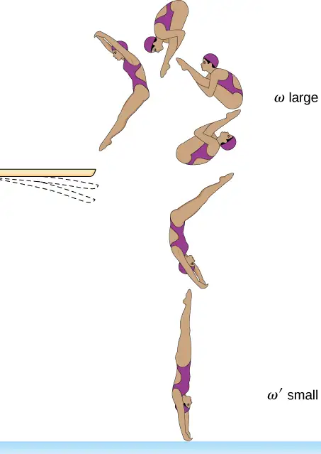
11.4 Precession of a Gyroscope¶
17. Gyroscopes used in guidance systems to indicate directions in space must have an angular momentum that does not change in direction. When placed in the vehicle, they are put in a compartment that is separated from the main fuselage, such that changes in the orientation of the fuselage does not affect the orientation of the gyroscope. If the space vehicle is subjected to large forces and accelerations how can the direction of the gyroscopes angular momentum be constant at all times?
Answer
A torque is needed in the direction perpendicular to the angular momentum vector in order to change its direction. These forces on the space vehicle are external to the container in which the gyroscope is mounted and do not impart torques to the gyroscope’s rotating disk.
18. Earth precesses about its vertical axis with a period of 26,000 years. Discuss whether Equation 11.12 can be used to calculate the precessional angular velocity of Earth.
Problems¶
11.1 Rolling Motion¶
19. What is the angular velocity of a 75.0-cm-diameter tire on an automobile traveling at 90.0 km/h?
Answer
\(v_{\text{CM}}=R\omega\:\Rightarrow\omega=66.7\:\text{rad/s}\)
20. A boy rides his bicycle 2.00 km. The wheels have radius 30.0 cm. What is the total angle the tires rotate through during his trip?
21. If the boy on the bicycle in the preceding problem accelerates from rest to a speed of 10.0 m/s in 10.0 s, what is the angular acceleration of the tires?
Answer
\(\alpha=3.3\:\text{rad}\text{/}\text{s}^{2}\)
22. Formula One race cars have 66-cm-diameter tires. If a Formula One averages a speed of 300 km/h during a race, what is the angular displacement in revolutions of the wheels if the race car maintains this speed for 1.5 hours?
23. A marble rolls down an incline at \(30{}^{\circ}\) from rest. (a) What is its acceleration? (b) How far does it go in 3.0 s?
Answer
\(I_{\text{CM}}=\frac{2}{5}mr^{2},\:a_{\text{CM}}=3.5\:\text{m}\text{/}\text{s}^{2};\:x=15.75\:\text{m}\)
24. Repeat the preceding problem replacing the marble with a solid cylinder. Explain the new result.
25. A rigid body with a cylindrical cross-section is released from the top of a \(30{}^{\circ}\) incline. It rolls 10.0 m to the bottom in 2.60 s. Find the moment of inertia of the body in terms of its mass m and radius r.
Answer
positive is down the incline plane;
\(a_{\text{CM}}=\frac{mg\:\sin\:\theta}{m+(I_{\text{CM}}\text{/}r^{2})}\Rightarrow I_{\text{CM}}=r^{2}\left[ \frac{mg\:\sin 30}{a_{\text{CM}}}-m \right]\),
\(x-x_{0}=v_{0}t-\frac{1}{2}a_{\text{CM}}t^{2}\Rightarrow a_{\text{CM}}=2.96\:\text{m/s}^{2},\)
\(I_{\text{CM}}=0.66\:mr^{2}\)
26. A yo-yo can be thought of a solid cylinder of mass m and radius r that has a light string wrapped around its circumference (see below). One end of the string is held fixed in space. If the cylinder falls as the string unwinds without slipping, what is the acceleration of the cylinder?
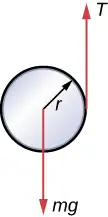
27. A solid cylinder of radius 10.0 cm rolls down an incline with slipping. The angle of the incline is \(30{}^{\circ}.\) The coefficient of kinetic friction on the surface is 0.400. What is the angular acceleration of the solid cylinder? What is the linear acceleration?
Answer
\(\alpha=67.9\:\text{rad}\text{/}\text{s}^{2}\),
\({(a_{\text{CM}})}_{x}=1.5\:\text{m}\text{/}\text{s}^{2}\)
28. A bowling ball rolls up a ramp 0.5 m high without slipping to storage. It has an initial velocity of its center of mass of 3.0 m/s. (a) What is its velocity at the top of the ramp? (b) If the ramp is 1 m high does it make it to the top?
29. A 40.0-kg solid cylinder is rolling across a horizontal surface at a speed of 6.0 m/s. How much work is required to stop it?
Answer
\(W=-1080.0\:\text{J}\)
30. A 40.0-kg solid sphere is rolling across a horizontal surface with a speed of 6.0 m/s. How much work is required to stop it? Compare results with the preceding problem.
31. A solid cylinder rolls up an incline at an angle of \(20{}^{\circ}.\) If it starts at the bottom with a speed of 10 m/s, how far up the incline does it travel?
Answer
Mechanical energy at the bottom equals mechanical energy at the top;
\(\frac{1}{2}mv_{0}^{2}+\frac{1}{2}\left( \frac{1}{2}mr^{2} \right){\left( \frac{v_{0}}{r} \right)}^{2}=mgh\Rightarrow h=\frac{1}{g}\left( \frac{1}{2}+\frac{1}{4} \right)v_{0}^{2}\),
\(h=7.7\:\text{m,}\) so the distance up the incline is \(22.5\:\text{m}\).
32. A solid cylindrical wheel of mass M and radius R is pulled by a force \(\mathbf{\vec{F}}\) applied to the center of the wheel at \(37{}^{\circ}\) to the horizontal (see the following figure). If the wheel is to roll without slipping, what is the maximum value of \(|\mathbf{\vec{F}}|?\) The coefficients of static and kinetic friction are \(\mu_{\text{S}}=0.40\:\text{and}\:\mu_{\text{k}}=0.30.\)
![The forces on a wheel, radius R, on a horizontal surface are shown. The wheel is centered on an x y coordinate system that has positive x to the right and positive y up. Force F acts on the center of the wheel at an angle of 37 degrees above the positive x direction. Force M g acts on the center of the wheel and points down. Force N points up and acts at the contact point where the wheel touches the surface. Force f sub s points to the left and acts at the contact point where the wheel touches the surface.](img/cnx-uphysics-11-01-prob22-img.webp)
33. A hollow cylinder that is rolling without slipping is given an initial velocity and rolls up an incline to a vertical height of 1.0 m. If a hollow sphere of the same mass and radius is given the same initial velocity, how high vertically does it roll up the incline?
Answer
Use energy conservation
\(\frac{1}{2}mv_{0}^{2}+\frac{1}{2}I_{\text{Cyl}}\omega_{0}^{2}=mgh_{\text{Cyl}}\),
\(\frac{1}{2}mv_{0}^{2}+\frac{1}{2}I_{\text{Sph}}\omega_{0}^{2}=mgh_{\text{Sph}}\).
Subtracting the two equations, eliminating the initial translational energy, we have
\(h_{\mathrm{Cyl}}=\frac{v_{0}^{2}}{g}\),
\(h_{\mathrm{Sph}}=\frac{5v_{0}^{2}}{6g}\),
The ratio of the height reached by the sphere to the height reached by the cylinder is \(\frac{h_{\text{Sph}}}{h_{\text{Cyl}}}=\frac{5}{6}.\)
So the sphere reaches a lower height of \(\frac{5}{6}(1.0\:\text{m})=0.83\:\text{m.}\)
11.2 Angular Momentum¶
34. A 0.2-kg particle is travelling along the line \(y=2.0\:\text{m}\) with a velocity \(5.0\:\text{m}\text{/}\text{s}\). What is the angular momentum of the particle about the origin?
35. A bird flies overhead from where you stand at an altitude of 300.0 m and at a speed horizontal to the ground of 20.0 m/s. The bird has a mass of 2.0 kg. The radius vector to the bird makes an angle \(\theta\) with respect to the ground. The radius vector to the bird and its momentum vector lie in the xy-plane. What is the bird’s angular momentum about the point where you are standing?
Answer
The magnitude of the cross product of the radius to the bird and its momentum vector yields \(rp\:\sin\:\theta\), which gives \(r\:\sin\:\theta\) as the altitude of the bird h. The direction of the angular momentum is perpendicular to the radius and momentum vectors, which we choose arbitrarily as \(\mathbf{\hat{k}}\), which is in the plane of the ground:
\(\mathbf{\vec{L}}=\mathbf{\vec{r}}\:\times\:\mathbf{\vec{p}}=hmv\mathbf{\hat{k}}=(300.0\:\text{m})(2.0\:\text{kg})(20.0\:\text{m}\text{/}\text{s})\mathbf{\hat{k}}=12,000.0\:\text{kg}\cdot\text{m}^{2}\text{/}\text{s}\mathbf{\hat{k}}\)
36. A Formula One race car with mass 750.0 kg is speeding through a course in Monaco and enters a circular turn at 220.0 km/h in the counterclockwise direction about the origin of the circle. At another part of the course, the car enters a second circular turn at 180 km/h also in the counterclockwise direction. If the radius of curvature of the first turn is 130.0 m and that of the second is 100.0 m, compare the angular momenta of the race car in each turn taken about the origin of the circular turn.
37. A particle of mass 5.0 kg has position vector \(\mathbf{\vec{r}}=(2.0\mathbf{\hat{i}}-3.0\mathbf{\hat{j}})\text{m}\) at a particular instant of time when its velocity is \(\mathbf{\vec{v}}=(3.0\mathbf{\hat{i}})\text{m}\text{/}\text{s}\) with respect to the origin. (a) What is the angular momentum of the particle? (b) If a force \(\mathbf{\vec{F}}=5.0\mathbf{\hat{j}}\:\text{N}\) acts on the particle at this instant, what is the torque about the origin?
Answer
a. \(\mathbf{\vec{l}}=45.0\:\text{kg}\cdot\text{m}^{2}\text{/}\text{s}\mathbf{\hat{k}}\);
b. \(\mathbf{\vec{\tau}}=10.0\:\text{N}\cdot\text{m}\mathbf{\hat{k}}\)
38. Use the right-hand rule to determine the directions of the angular momenta about the origin of the particles as shown below. The z-axis is out of the page.
![Fout particles in the x y plane with different position and velocity vectors are shown. The x and y axes show position in meters and have a range of -4.0 to 4.0 meters. Particle 1 has mass m sub 1, is at x=0 meters and y=2.0 meters, and v sub 1 points in the positive x direction. Particle 2 has mass m sub 2, is at x=2.0 meters and y=-2.0 meters, and v sub 2 point to the right and down, roughly 45 degrees below the positive x direction. Particle 3 has mass m sub 3, is at x=-3.0 meters and y=1.0 meters, and v sub 3 points down, in the negative y direction. Particle 4has mass m sub 4, is at x=4.0 meters and y=0 meters, and v sub 4 points to the left, in the negative x direction.](img/cnx-uphysics-11-02-prob8-img.webp)
39. Suppose the particles in the preceding problem have masses \(m_{1}=0.10\:\text{kg,}\;m_{2}=0.20\:\text{kg,}\;m_{3}=0.30\:\text{kg,}\) \(m_{4}=0.40\:\text{kg}\). The velocities of the particles are \(v_{1}=2.0\mathbf{\hat{i}}\text{m}\text{/}\text{s}\), \(v_{2}=(3.0\mathbf{\hat{i}}-3.0\mathbf{\hat{j}})\text{m}\text{/}\text{s}\), \(v_{3}=-1.5\mathbf{\hat{j}}\text{m}\text{/}\text{s}\), \(v_{4}=-4.0\mathbf{\hat{i}}\text{m}\text{/}\text{s}\). (a) Calculate the angular momentum of each particle about the origin. (b) What is the total angular momentum of the four-particle system about the origin?
Answer
a. \({\mathbf{\vec{l}}}_{1}=-0.4\:\text{kg}\cdot\text{m}^{2}\text{/}\text{s}\mathbf{\hat{k}}\), \({\mathbf{\vec{l}}}_{2}={\mathbf{\vec{l}}}_{4}=0\),
\({\mathbf{\vec{l}}}_{3}=1.35\:\text{kg}\cdot\text{m}^{2}\text{/}\text{s}\mathbf{\hat{k}}\); b. \(\mathbf{\vec{L}}=0.95\:\text{kg}\cdot\text{m}^{2}\text{/}\text{s}\mathbf{\hat{k}}\)
40. Two particles of equal mass travel with the same speed in opposite directions along parallel lines separated by a distance d. Show that the angular momentum of this two-particle system is the same no matter what point is used as the reference for calculating the angular momentum.
41. An airplane of mass \(4.0\:\times\:{10}^{4}\:\text{kg}\) flies horizontally at an altitude of 10 km with a constant speed of 250 m/s relative to Earth. (a) What is the magnitude of the airplane’s angular momentum relative to a ground observer directly below the plane? (b) Does the angular momentum change as the airplane flies along a constant altitude?
Answer
a. \(L=1.0\:\times\:{10}^{11}\:\text{kg}\cdot\text{m}^{2}\text{/}\text{s}\); b. No, the angular momentum stays the same since the cross-product involves only the perpendicular distance from the plane to the ground no matter where it is along its path.
42. At a particular instant, a 1.0-kg particle’s position is \(\mathbf{\vec{r}}=(2.0\mathbf{\hat{i}}-4.0\mathbf{\hat{j}}+6.0\mathbf{\hat{k}})\text{m}\), its velocity is \(\mathbf{\vec{v}}=(-1.0\mathbf{\hat{i}}+4.0\mathbf{\hat{j}}+1.0\mathbf{\hat{k}})\text{m}\text{/}\text{s}\), and the force on it is \(\mathbf{\vec{F}}=(10.0\mathbf{\hat{i}}+15.0\mathbf{\hat{j}})\text{N}\). (a) What is the angular momentum of the particle about the origin? (b) What is the torque on the particle about the origin? (c) What is the time rate of change of the particle’s angular momentum at this instant?
43. A particle of mass m is dropped at the point \((-d,0)\) and falls vertically in Earth’s gravitational field \(-g\mathbf{\hat{j}}.\) (a) What is the expression for the angular momentum of the particle around the z-axis, which points directly out of the page as shown below? (b) Calculate the torque on the particle around the z-axis. (c) Is the torque equal to the time rate of change of the angular momentum?
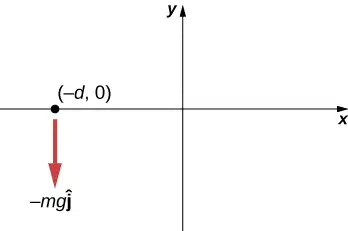
Answer
a. \(\mathbf{\vec{v}}=-gt\mathbf{\hat{j}},\;{\mathbf{\vec{r}}}_{\perp}=-d\mathbf{\hat{i}},\;\mathbf{\vec{l}}=mdgt\mathbf{\hat{k}}\);
b. \(\mathbf{\vec{F}}=-mg\mathbf{\hat{j}},\;\displaystyle \sum\mathbf{\vec{\tau}}=dmg\mathbf{\hat{k}}\); c. yes
44. (a) Calculate the angular momentum of Earth in its orbit around the Sun. (b) Compare this angular momentum with the angular momentum of Earth about its axis.
45. A boulder of mass 20 kg and radius 20 cm rolls down a hill 15 m high from rest. What is its angular momentum when it is half way down the hill? (b) At the bottom?
Answer
a. \(mgh=\frac{1}{2}m{(r\omega)}^{2}+\frac{1}{2}\frac{2}{5}mr^{2}\omega^{2}\);
\(\omega=51.2\:\text{rad}\text{/}\text{s}\);
\(L=16.4\:\text{kg}\cdot\text{m}^{2}\text{/}\text{s}\);
b. \(\omega=72.5\:\text{rad}\text{/}\text{s}\);
\(L=23.2\:\text{kg}\cdot\text{m}^{2}\text{/}\text{s}\)
46. A satellite is spinning at 6.0 rev/s. The satellite consists of a main body in the shape of a sphere of radius 2.0 m and mass 10,000 kg, and two antennas projecting out from the center of mass of the main body that can be approximated with rods of length 3.0 m each and mass 10 kg. The antenna’s lie in the plane of rotation. What is the angular momentum of the satellite?
47. A propeller consists of two blades each 3.0 m in length and mass 120 kg each. The propeller can be approximated by a single rod rotating about its center of mass. The propeller starts from rest and rotates up to 1200 rpm in 30 seconds at a constant rate. (a) What is the angular momentum of the propeller at \(t=10\:\text{s;}\:t=20\:\text{s?}\) (b) What is the torque on the propeller?
Answer
a. \(I=720.0\:\text{kg}\cdot\text{m}^{2}\); \(\alpha=4.20\:\text{rad}\text{/}\text{s}^{2}\);
\(\omega(10\:\text{s})=42.0\:\text{rad}\text{/}\text{s}\); \(L=3.02\:\times\:{10}^{4}\:\text{kg}\cdot\text{m}^{2}\text{/}\text{s}\);
\(\omega(20\:\text{s})=84.0\:\text{rad}\text{/}\text{s}\);
b. \(\tau=3.03\:\times\:{10}^{3}\:\text{N}\cdot\text{m}\)
48. A pulsar is a rapidly rotating neutron star. The Crab nebula pulsar in the constellation Taurus has a period of \(33.5\:\times\:{10}^{-3}\:\text{s}\), radius 10.0 km, and mass \(2.8\:\times\:{10}^{30}\:\text{kg}.\) The pulsar’s rotational period will increase over time due to the release of electromagnetic radiation, which doesn’t change its radius but reduces its rotational energy. (a) What is the angular momentum of the pulsar? (b) Suppose the angular velocity decreases at a rate of \({10}^{-14}\:\text{rad}\text{/}\text{s}^{2}\). What is the torque on the pulsar?
49. The blades of a wind turbine are 30 m in length and rotate at a maximum rotation rate of 20 rev/min. (a) If the blades are 6000 kg each and the rotor assembly has three blades, calculate the angular momentum of the turbine at this rotation rate. (b) What is the torque require to rotate the blades up to the maximum rotation rate in 5 minutes?
Answer
a. \(L=1.131\:\times\:{10}^{7}\:\text{kg}\cdot\text{m}^{2}\text{/}\text{s}\);
b. \(\tau=3.77\:\times\:{10}^{4}\:\text{N}\cdot\text{m}\)
50. A roller coaster has mass 3000.0 kg and needs to make it safely through a vertical circular loop of radius 50.0 m. What is the minimum angular momentum of the coaster at the bottom of the loop to make it safely through? Neglect friction on the track. Take the coaster to be a point particle.
51. A mountain biker takes a jump in a race and goes airborne. The mountain bike is travelling at 10.0 m/s before it goes airborne. If the mass of the front wheel on the bike is 750 g and has radius 35 cm, what is the angular momentum of the spinning wheel in the air the moment the bike leaves the ground?
Answer
\(\omega=28.6\:\text{rad}\text{/}\text{s}\Rightarrow L=2.6\:\text{kg}\cdot\text{m}^{2}\text{/}\text{s}\)
11.3 Conservation of Angular Momentum¶
52. A disk of mass 2.0 kg and radius 60 cm with a small mass of 0.05 kg attached at the edge is rotating at 2.0 rev/s. The small mass, while attached to the disk, slides gradually to the center of the disk. What is the disk’s final rotation rate?
53. The Sun’s mass is \(2.0\:\times\:{10}^{30}\text{kg,}\) its radius is \(7.0\:\times\:{10}^{5}\:\text{km,}\) and it has a rotational period of approximately 28 days. If the Sun should collapse into a white dwarf of radius \(3.5\:\times\:{10}^{3}\:\text{km,}\) what would its period be if no mass were ejected and a sphere of uniform density can model the Sun both before and after?
Answer
\(L_{f}=\frac{2}{5}M_{S}{(3.5\:\times\:{10}^{3}\text{km})}^{2}\frac{2\pi}{T_{f}}\),
\(\begin{array}{c} {(7.0\:\times\:{10}^{5}\:\text{km})}^{2}\frac{2\pi}{28\:\text{days}}={(3.5\:\times\:{10}^{3}\text{km})}^{2}\frac{2\pi}{T_{f}}\Rightarrow T_{f} \\ \\ \\ =28\:\text{days}\frac{{(3.5\:\times\:{10}^{3}\text{km})}^{2}}{{(7.0\:\times\:{10}^{5}\text{km})}^{2}}=7.0\:\times\:{10}^{-4}\text{day}=60.5\:\text{s} \end{array}\)
54. A cylinder with rotational inertia \(I_{1}=2.0\:\text{kg}\cdot\text{m}^{2}\) rotates clockwise about a vertical axis through its center with angular speed \(\omega_{1}=5.0\:\text{rad}\text{/}\text{s}.\) A second cylinder with rotational inertia \(I_{2}=1.0\:\text{kg}\cdot\text{m}^{2}\) rotates counterclockwise about the same axis with angular speed \(\omega_{2}=8.0\:\text{rad}\text{/}\text{s}\). If the cylinders couple so they have the same rotational axis what is the angular speed of the combination? What percentage of the original kinetic energy is lost to friction?
55. A diver off the high board imparts an initial rotation with their body fully extended before going into a tuck and executing three back somersaults before hitting the water. If their moment of inertia before the tuck is \(16.9\:\text{kg}\cdot\text{m}^{2}\) and after the tuck during the somersaults is \(4.2\:\text{kg}\cdot\text{m}^{2}\), what rotation rate must the diver impart to their body directly off the board and before the tuck if they take 1.4 s to execute the somersaults before hitting the water?
Answer
\(f_{\text{f}}=2.1\:\text{rev}\text{/}\text{s}\Rightarrow f_{0}=0.5\:\text{rev}\text{/}\text{s}\)
56. An Earth satellite has its apogee at 2500 km above the surface of Earth and perigee at 500 km above the surface of Earth. At apogee its speed is 6260 m/s. What is its speed at perigee? Earth’s radius is 6370 km (see below).
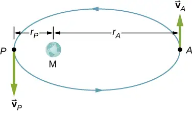
57. A Molniya orbit is a highly eccentric orbit of a communication satellite so as to provide continuous communications coverage for Scandinavian countries and adjacent Russia. The orbit is positioned so that these countries have the satellite in view for extended periods in time (see below). If a satellite in such an orbit has an apogee at 40,000.0 km as measured from the center of Earth and a velocity of 1.68 km/s, what would be its velocity at perigee measured at 200.0 km altitude?
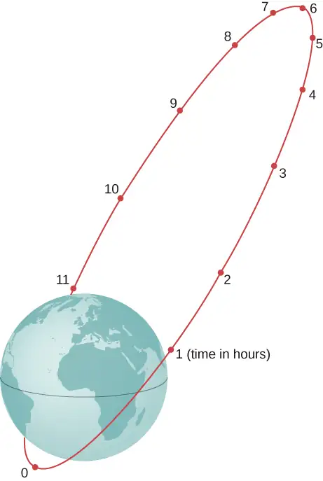
Answer
\(r_{P}mv_{P}=r_{A}mv_{A}\Rightarrow v_{P}=10.2\:\text{km}\text{/}\text{s}\)
58. Shown below is a small particle of mass 20 g that is moving at a speed of 10.0 m/s when it collides and sticks to the edge of a uniform solid cylinder. The cylinder is free to rotate about its axis through its center and is perpendicular to the page. The cylinder has a mass of 0.5 kg and a radius of 10 cm, and is initially at rest. (a) What is the angular velocity of the system after the collision? (b) How much kinetic energy is lost in the collision?
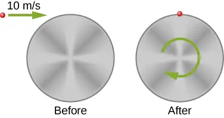
59. A bug of mass 0.020 kg is at rest on the edge of a solid cylindrical disk \((M=0.10\:\text{kg,}\:R=0.10\:\text{m})\) rotating in a horizontal plane around the vertical axis through its center. The disk is rotating at 10.0 rad/s. The bug crawls to the center of the disk. (a) What is the new angular velocity of the disk? (b) What is the change in the kinetic energy of the system? (c) If the bug crawls back to the outer edge of the disk, what is the angular velocity of the disk then? (d) What is the new kinetic energy of the system? (e) What is the cause of the increase and decrease of kinetic energy?
Answer
a. \(I_{\text{disk}}=5.0\:\times\:{10}^{-4}\:\text{kg}\cdot\text{m}^{2}\),
\(I_{\text{bug}}=2.0\:\times\:{10}^{-4}\:\text{kg}\cdot\text{m}^{2}\),
\(\begin{array}{c} (I_{\text{disk}}+I_{\text{bug}})\omega_{1}=I_{\text{disk}}\omega_{2}, \\ \\ \\ \omega_{2}=14.0\:\text{rad}\text{/}\text{s} \end{array}\)
b. \(\Delta K=0.014\:\text{J}\);
c. \(\omega_{3}=10.0\:\text{rad}\text{/}\text{s}\) back to the original value;
d. \(\frac{1}{2}(I_{\text{disk}}+I_{\text{bug}})\omega_{3}^{2}=0.035\:\text{J}\) back to the original value;
e. work of the bug crawling on the disk
60. A uniform rod of mass 200 g and length 100 cm is free to rotate in a horizontal plane around a fixed vertical axis through its center, perpendicular to its length. Two small beads, each of mass 20 g, are mounted in grooves along the rod. Initially, the two beads are held by catches on opposite sides of the rod’s center, 10 cm from the axis of rotation. With the beads in this position, the rod is rotating with an angular velocity of 10.0 rad/s. When the catches are released, the beads slide outward along the rod. (a) What is the rod’s angular velocity when the beads reach the ends of the rod? (b) What is the rod’s angular velocity if the beads fly off the rod?
61. A merry-go-round has a radius of 2.0 m and a moment of inertia \(300\:\text{kg}\cdot\text{m}^{2}.\) A boy of mass 50 kg runs tangent to the rim at a speed of 4.0 m/s and jumps on. If the merry-go-round is initially at rest, what is the angular velocity after the boy jumps on?
Answer
\(L_{\text{i}}=400.0\:\text{kg}\cdot\text{m}^{2}\text{/}\text{s}\),
\(L_{\text{f}}=500.0\:\text{kg}\cdot\text{m}^{2}\omega\),
\(\omega=0.80\:\text{rad}\text{/}\text{s}\)
62. A playground merry-go-round has a mass of 120 kg and a radius of 1.80 m and it is rotating with an angular velocity of 0.500 rev/s. What is its angular velocity after a 22.0-kg child gets onto it by grabbing its outer edge? The child is initially at rest.
63. Three children are riding on the edge of a merry-go-round that is 100 kg, has a 1.60-m radius, and is spinning at 20.0 rpm. The children have masses of 22.0, 28.0, and 33.0 kg. If the child who has a mass of 28.0 kg moves to the center of the merry-go-round, what is the new angular velocity in rpm?
Answer
\(I_{0}=340.48\:\text{kg}\cdot\text{m}^{2}\),
\(I_{\text{f}}=268.8\:\text{kg}\cdot\text{m}^{2}\),
\(\omega_{\text{f}}=25.33\:\text{rpm}\)
64. (a) Calculate the angular momentum of an ice skater spinning at 6.00 rev/s given his moment of inertia is \(0.400\:\text{kg}\cdot\text{m}^{2}\). (b) He reduces his rate of spin (his angular velocity) by extending his arms and increasing his moment of inertia. Find the value of his moment of inertia if his angular velocity decreases to 1.25 rev/s. (c) Suppose instead he keeps his arms in and allows friction of the ice to slow him to 3.00 rev/s. What average torque was exerted if this takes 15.0 s?
65. Twin skaters approach one another as shown below and lock hands. (a) Calculate their final angular velocity, given each had an initial speed of 2.50 m/s relative to the ice. Each has a mass of 70.0 kg, and each has a center of mass located 0.800 m from their locked hands. You may approximate their moments of inertia to be that of point masses at this radius. (b) Compare the initial kinetic energy and final kinetic energy.
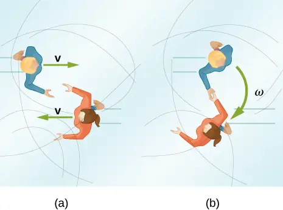
Answer
a. \(L=280\:\text{kg}\cdot\text{m}^{2}\text{/}\text{s}\),
\(I_{\text{f}}=89.6\:\text{kg}\cdot\text{m}^{2}\),
\(\omega_{\text{f}}=3.125\:\text{rad}\text{/}\text{s}\); b. \(K_{\text{i}}=437.5\:\text{J}\),
\(K_{\text{f}}=437.5\:\text{J}\)
66. A baseball catcher extends his arm straight up to catch a fast ball with a speed of 40 m/s. The baseball is 0.145 kg and the catcher’s arm length is 0.5 m and mass 4.0 kg. (a) What is the angular velocity of the arm immediately after catching the ball as measured from the arm socket? (b) What is the torque applied if the catcher stops the rotation of his arm 0.3 s after catching the ball?
67. In 2015, in Warsaw, Poland, Olivia Oliver of Nova Scotia broke the world record for being the fastest spinner on ice skates. She achieved a record 342 rev/min, beating the existing Guinness World Record by 34 rotations. If an ice skater extends her arms at that rotation rate, what would be her new rotation rate? Assume she can be approximated by a 45-kg rod that is 1.7 m tall with a radius of 15 cm in the record spin. With her arms stretched take the approximation of a rod of length 130 cm with \(10\%\) of her body mass aligned perpendicular to the spin axis. Neglect frictional forces.
Answer
Moment of inertia in the record spin: \(I_{0}=0.5\:\text{kg}\cdot\text{m}^{2}\),
\(I_{\text{f}}=1.1\:\text{kg}\cdot\text{m}^{2}\),
\(\omega_{\text{f}}=\frac{I_{0}}{I_{\text{f}}}\omega_{0}\Rightarrow f_{\text{f}}=155.5\:\text{rev}\text{/}\min\)
68. A satellite in a geosynchronous circular orbit is 42,164.0 km from the center of Earth. A small asteroid collides with the satellite sending it into an elliptical orbit of apogee 45,000.0 km. What is the speed of the satellite at apogee? Assume its angular momentum is conserved.
69. A gymnast does cartwheels along the floor and then launches herself into the air and executes several flips in a tuck while she is airborne. If her moment of inertia when executing the cartwheels is \(13.5\:\text{kg}\cdot\text{m}^{2}\) and her spin rate is 0.5 rev/s, how many revolutions does she do in the air if her moment of inertia in the tuck is \(3.4\:\text{kg}\cdot\text{m}^{2}\) and she has 2.0 s to do the flips in the air?
Answer
Her spin rate in the air is: \(f_{\text{f}}=2.0\:\text{rev}\text{/}\text{s}\);
She can do four flips in the air.
70. The centrifuge at NASA Ames Research Center has a radius of 8.8 m and can produce forces on its payload of 20 gs or 20 times the force of gravity on Earth. (a) What is the angular momentum of a 20-kg payload that experiences 10 gs in the centrifuge? (b) If the driver motor was turned off in (a) and the payload lost 10 kg, what would be its new spin rate, taking into account there are no frictional forces present?
71. A ride at a carnival has four spokes to which pods are attached that can hold two people. The spokes are each 15 m long and are attached to a central axis. Each spoke has mass 200.0 kg, and the pods each have mass 100.0 kg. If the ride spins at 0.2 rev/s with each pod containing two 50.0-kg children, what is the new spin rate if all the children jump off the ride?
Answer
Moment of inertia with all children aboard:
\(I_{0}=2.4\:\times\:{10}^{5}\:\text{kg}\cdot\text{m}^{2}\);
\(I_{\text{f}}=1.5\:\times\:{10}^{5}\:\text{kg}\cdot\text{m}^{2}\);
\(f_{\text{f}}=0.3\text{rev}\text{/}\text{s}\)
72. An ice skater is preparing for a jump with turns and has his arms extended. His moment of inertia is \(1.8\:\text{kg}\cdot\text{m}^{2}\) while his arms are extended, and he is spinning at 0.5 rev/s. If he launches himself into the air at 9.0 m/s at an angle of \(45{}^{\circ}\) with respect to the ice, how many revolutions can he execute while airborne if his moment of inertia in the air is \(0.5\:\text{kg}\cdot\text{m}^{2}\)?
73. A space station consists of a giant rotating hollow cylinder of mass \({10}^{6}\:\text{kg}\) including people on the station and a radius of 100.00 m. It is rotating in space at 3.30 rev/min in order to produce artificial gravity. If 100 people of an average mass of 65.00 kg spacewalk to an awaiting spaceship, what is the new rotation rate when all the people are off the station?
Answer
\(I_{0}=1.00\:\times\:{10}^{10}\:\text{kg}\cdot\text{m}^{2}\),
\(I_{\text{f}}=9.94\:\times\:{10}^{9}\:\text{kg}\cdot\text{m}^{2}\),
\(f_{\text{f}}=3.32\:\text{rev}\text{/}\min\)
74. Neptune has a mass of \(1.0\:\times\:{10}^{26}\:\text{kg}\) and is \(4.5\:\times\:{10}^{9}\text{km}\) from the Sun with an orbital period of 165 years. Planetesimals in the outer primordial solar system 4.5 × 109 years ago coalesced into Neptune over hundreds of millions of years. If the primordial disk that evolved into our present day solar system had a radius of \({10}^{11}\) km and if the matter that made up these planetesimals that later became Neptune was spread out evenly on the edges of it, what was the orbital period of the outer edges of the primordial disk?
11.4 Precession of a Gyroscope¶
75. A gyroscope has a 0.5-kg disk that spins at 40 rev/s. The center of mass of the disk is 15 cm from a pivot with a radius of the disk of 10 cm. What is the precession angular velocity?
Answer
\(I=2.5\:\times\:{10}^{-3}\:\text{kg}\cdot\text{m}^{2}\),
\(\omega_{P}=1.17\:\text{rad}\text{/}\text{s}\)
76. The precession angular velocity of a gyroscope is 1.0 rad/s. If the mass of the rotating disk is 0.4 kg and its radius is 30 cm, and the distance from the center of mass to the pivot is 40 cm, what is the rotation rate in rev/s of the disk?
77. The axis of Earth makes a \(23.5{}^{\circ}\) angle with a direction perpendicular to the plane of Earth’s orbit. As shown below, this axis precesses, making one complete rotation in 25,780 y.
(a) Calculate the change in angular momentum in half this time.
(b) What is the average torque producing this change in angular momentum?
(c) If this torque were created by a pair of forces acting at the most effective point on the equator, what would the magnitude of each force be?
![In the figure, the Earth’s image is shown. The plane of the Earth’s orbit is shown as a horizontal line at the equator. The Earth’s north south axis is inclined at an angle of 23.5 degrees from the vertical. There are two vectors, L and L prime, inclined at an angle of twenty three point five degree to the vertical, starting from the center of the Earth. Vector L goes through the Earth’s north pole. At the heads of the two vectors there is a circle, directed in counter clockwise direction as viewed from above. An angular momentum vector, Delta L, directed toward left, along its diameter, is shown.](img/cnx-uphysics-11-04-prob7-img.webp)
Answer
a. \(L_{\text{Earth}}=7.06\:\times\:{10}^{33}\:\text{kg}\cdot\text{m}^{2}\text{/}\text{s}\),
\(\Delta L=5.63\:\times\:{10}^{33}\:\text{kg}\cdot\text{m}^{2}\text{/}\text{s}\);
b. \(\tau=1.4\:\times\:{10}^{22}\:\text{N}\cdot\text{m}\);
c. The two forces at the equator would have the same magnitude but different directions, one in the north direction and the other in the south direction on the opposite side of Earth. The angle between the forces and the lever arms to the center of Earth is \(90{}^{\circ}\), so a given torque would have magnitude \(\tau=FR_{\text{E}}\:\sin\:90{}^{\circ}=FR_{\text{E}}\). Both would provide a torque in the same direction:
\(\tau=2FR_{\text{E}}\Rightarrow F=1.1\:\times\:{10}^{15}\:\text{N}\)
Additional Problems¶
78. A marble is rolling across the floor at a speed of 7.0 m/s when it starts up a plane inclined at \(30{}^{\circ}\) to the horizontal. (a) How far along the plane does the marble travel before coming to a rest? (b) How much time elapses while the marble moves up the plane?
79. Repeat the preceding problem replacing the marble with a hollow sphere. Explain the new results.
Answer
\(a_{\text{CM}}=-\frac{3}{10}g\),
\(v^{2}=v_{0}^{2}+2a_{\text{CM}}x\Rightarrow v^{2}=(7.0\:\text{m}\text{/}\text{s})^{2}-2\left( \frac{3}{10}g \right)x,\) \(v^{2}=0\Rightarrow x=8.34\:\text{m;}\)
b. \(t=\frac{v-v_{0}}{a_{\text{CM}}},\) \(v=v_{0}+a_{\text{CM}}t\Rightarrow t=2.38\:\text{s}\);
The hollow sphere has a larger moment of inertia, and therefore is harder to bring to a rest than the marble, or solid sphere. The distance travelled is larger and the time elapsed is longer.
80. The mass of a hoop of radius 1.0 m is 6.0 kg. It rolls across a horizontal surface with a speed of 10.0 m/s. (a) How much work is required to stop the hoop? (b) If the hoop starts up a surface at \(30{}^{\circ}\) to the horizontal with a speed of 10.0 m/s, how far along the incline will it travel before stopping and rolling back down?
81. Repeat the preceding problem for a hollow sphere of the same radius and mass and initial speed. Explain the differences in the results.
Answer
a. \(W=-500.0\:\text{J}\);
b. \(K+U_{\text{grav}}=\text{constant}\),
\(500\:\text{J}\:+0=0+(6.0\:\text{kg})(9.8\:\text{m}\text{/}\text{s}^{2})h\),
\(h=8.5\:\text{m,}\;d=17.0\:\text{m}\);
The moment of inertia is less for the hollow sphere, therefore less work is required to stop it. Likewise it rolls up the incline a shorter distance than the hoop.
82. A particle has mass 0.5 kg and is traveling along the line \(x=5.0\:\text{m}\) at 2.0 m/s in the positive y-direction. What is the particle’s angular momentum about the origin?
83. A 4.0-kg particle moves in a circle of radius 2.0 m. The angular momentum of the particle varies in time according to \(l=5.0t^{2}.\) (a) What is the torque on the particle about the center of the circle at \(t=3.4\:\text{s}\)? (b) What is the angular velocity of the particle at \(t=3.4\:\text{s}\)?
Answer
a. \(\tau=34.0\:\text{N}\cdot\text{m}\);
b. \(l=mr^{2}\omega\Rightarrow\omega=3.6\:\text{rad}\text{/}\text{s}\)
84. A proton is accelerated in a cyclotron to \(5.0\:\times\:{10}^{6}\:\text{m}\text{/}\text{s}\) in 0.01 s. The proton follows a circular path. If the radius of the cyclotron is 0.5 km, (a) What is the angular momentum of the proton about the center at its maximum speed? (b) What is the torque on the proton about the center as it accelerates to maximum speed?
85. (a) What is the angular momentum of the Moon in its orbit around Earth? (b) How does this angular momentum compare with the angular momentum of the Moon on its axis? Remember that the Moon keeps one side toward Earth at all times.
Answer
a. \(d_{\text{M}}=3.85\:\times\:{10}^{8}\:\text{m}\) average distance to the Moon; orbital period \(27.32\text{d}=2.36\:\times\:{10}^{6}\text{s}\); speed of the Moon \(\frac{2\pi 3.85\:\times\:{10}^{8}\:\text{m}}{2.36\:\times\:{10}^{6}\text{s}}=1.0\:\times\:{10}^{3}\:\text{m}\text{/}\text{s}\); mass of the Moon \(7.35\:\times\:{10}^{22}\:\text{kg}\),
\(L=2.90\:\times\:{10}^{34}\:\text{kg}\text{m}^{2}\text{/}\text{s}\);
b. radius of the Moon \(1.74\:\times\:{10}^{6}\:\text{m}\); the orbital period is the same as (a): \(\omega=2.66\:\times\:{10}^{-6}\:\text{rad}\text{/}\text{s}\),
\(L=2.37\:\times\:{10}^{29}\:\text{kg}\cdot\text{m}^{2}\text{/}\text{s}\);
The orbital angular momentum is \(1.22\:\times\:{10}^{5}\) times larger than the rotational angular momentum for the Moon.
86. A DVD is rotating at 500 rpm. What is the angular momentum of the DVD if has a radius of 6.0 cm and mass 20.0 g?
87. A potter’s disk spins from rest up to 10 rev/s in 15 s. The disk has a mass 3.0 kg and radius 30.0 cm. What is the angular momentum of the disk at \(t=5\:\text{s,}\:t=1\text{0 s}\)?
Answer
\(I=0.135\:\text{kg}\cdot\text{m}^{2}\),
\(\alpha=4.19\:\text{rad}\text{/}\text{s}^{2},\) \(\omega=\omega_{0}+\alpha t\),
\(\omega(5\:\text{s})=21.0\:\text{rad}\text{/}\text{s},\) \(L=2.84\:\text{kg}\cdot\text{m}^{2}\text{/}\text{s}\),
\(\omega(10\:\text{s})=41.9\:\text{rad}\text{/}\text{s},\) \(L=5.66\:\text{kg}\cdot\text{m}\text{/}\text{s}^{2}\)
88. Suppose you start an antique car by exerting a force of 300 N on its crank for 0.250 s. What is the angular momentum given to the engine if the handle of the crank is 0.300 m from the pivot and the force is exerted to create maximum torque the entire time?
89. A solid cylinder of mass 2.0 kg and radius 20 cm is rotating counterclockwise around a vertical axis through its center at 600 rev/min. A second solid cylinder of the same mass and radius is rotating clockwise around the same vertical axis at 900 rev/min. If the cylinders couple so that they rotate about the same vertical axis, what is the angular velocity of the combination?
Answer
In the conservation of angular momentum equation, the rotation rate appears on both sides so we keep the (rev/min) notation as the angular velocity can be multiplied by a constant to get (rev/min):
\(\begin{array}{ccc} L_{\text{i}} & = & -0.04\:\text{kg}\cdot\text{m}^{2}(300.0\:\text{rev}\text{/}\text{min),} \\ L_{\text{f}} & = & 0.08\:\text{kg}\cdot\text{m}^{2}f_{\text{f}}\Rightarrow f_{\text{f}}=-150.0\:\text{rev}\text{/}\text{min clockwise} \end{array}\)
90. A boy stands at the center of a platform that is rotating without friction at 1.0 rev/s. The boy holds weights as far from his body as possible. At this position the total moment of inertia of the boy, platform, and weights is \(5.0\:\text{kg}\cdot\text{m}^{2}.\) The boy draws the weights in close to his body, thereby decreasing the total moment of inertia to \(1.5\:\text{kg}\cdot\text{m}^{2}.\) (a) What is the final angular velocity of the platform? (b) By how much does the rotational kinetic energy increase?
91. Eight children, each of mass 40 kg, climb on a small merry-go-round. They position themselves evenly on the outer edge and join hands. The merry-go-round has a radius of 4.0 m and a moment of inertia \(1000.0\:\text{kg}\cdot\text{m}^{2}\). After the merry-go-round is given an angular velocity of 6.0 rev/min, the children walk inward and stop when they are 0.75 m from the axis of rotation. What is the new angular velocity of the merry-go-round? Assume there is negligible frictional torque on the structure.
Answer
\(I_{0}\omega_{0}=I_{\text{f}}\omega_{\text{f}}\),
\(I_{0}=6120.0\:\text{kg}\cdot\text{m}^{2}\),
\(I_{\text{f}}=1180.0\:\text{kg}\cdot\text{m}^{2}\),
\(\omega_{\text{f}}=31.1\:\text{rev}\text{/}\min\)
92. A thin meter stick of mass 150 g rotates around an axis perpendicular to the stick’s long axis at an angular velocity of 240 rev/min. What is the angular momentum of the stick if the rotation axis (a) passes through the center of the stick? (b) Passes through one end of the stick?
93. A satellite in the shape of a sphere of mass 20,000 kg and radius 5.0 m is spinning about an axis through its center of mass. It has a rotation rate of 8.0 rev/s. Two antennas deploy in the plane of rotation extending from the center of mass of the satellite. Each antenna can be approximated as a rod has mass 200.0 kg and length 7.0 m. What is the new rotation rate of the satellite?
Answer
\(L_{\text{i}}=1.00\:\times\:{10}^{7}\:\text{kg}\cdot\text{m}^{2}\text{/}\text{s}\),
\(I_{\text{f}}=2.025\:\times\:{10}^{5}\:\text{kg}\cdot\text{m}^{2}\),
\(\omega_{\text{f}}=7.86\:\text{rev}\text{/}\text{s}\)
94. A top has moment of inertia \(3.2\:\times\:{10}^{-4}\:\text{kg}\cdot\text{m}^{2}\) and radius 4.0 cm from the center of mass to the pivot point. If it spins at 20.0 rev/s and is precessing, how many revolutions does it precess in 10.0 s?
Challenge Problems¶
95. The truck shown below is initially at rest with solid cylindrical roll of paper sitting on its bed. If the truck moves forward with a uniform acceleration a, what distance s does it move before the paper rolls off its back end? (Hint: If the roll accelerates forward with \(a'\), then is accelerates backward relative to the truck with an acceleration \(a-a'\). Also, \(R\alpha=a-a'\).)
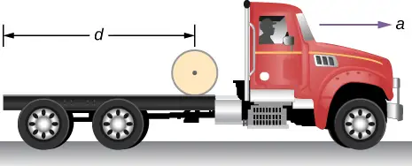
Answer
Assume the roll accelerates forward with respect to the ground with an acceleration \(a'\). Then it accelerates backwards relative to the truck with an acceleration \((a-a')\).
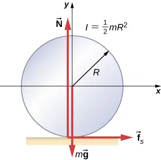
Also, \(R\alpha=a-a'\:I=\frac{1}{2}mR^{2}\;\displaystyle \sum F_{x}=f_{s}=ma'\),
\(\displaystyle \sum\tau=f_{s}R=I\alpha=I\frac{a-a'}{R}\;f_{s}=\frac{I}{R^{2}}(a-a')=\frac{1}{2}m(a-a')\),
Solving for \(a'\): \(f_{s}=\frac{1}{2}m(a-a')\); \(a'=\frac{a}{3}\),
\(x-x_{0}=v_{0}t+\frac{1}{2}at^{2};\;d=\frac{1}{3}at^{2};\;t=\sqrt{\frac{3d}{a}};\)
therefore, \(s=1.5d\)
96. A bowling ball of radius 8.5 cm is tossed onto a bowling lane with speed 9.0 m/s. The direction of the toss is to the left, as viewed by the observer, so the bowling ball starts to rotate counterclockwise when in contact with the floor. The coefficient of kinetic friction on the lane is 0.3. (a) What is the time required for the ball to come to the point where it is not slipping? What is the distance d to the point where the ball is rolling without slipping?
97. A small ball of mass 0.50 kg is attached by a massless string to a vertical rod that is spinning as shown below. When the rod has an angular velocity of 6.0 rad/s, the string makes an angle of \(30{}^{\circ}\) with respect to the vertical. (a) If the angular velocity is increased to 10.0 rad/s, what is the new angle of the string? (b) Calculate the initial and final angular momenta of the ball. (c) Can the rod spin fast enough so that the ball is horizontal?
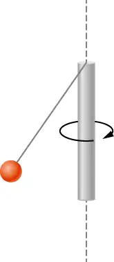
Answer
a. The tension in the string provides the centripetal force such that \(T\:\sin\:\theta=mr_{\perp}\omega^{2}\). The component of the tension that is vertical opposes the gravitational force such that \(T\:\cos\:\theta=mg\). This gives \(T=5.7\:\text{N}\). We solve for \(r_{\perp}=0.16\:\text{m}\). This gives the length of the string as \(r=0.32\:\text{m}\).
At \(\omega=10.0\:\text{rad}\text{/}\text{s}\), there is a new angle, tension, and perpendicular radius to the rod. Dividing the two equations involving the tension to eliminate it, we have \(\frac{\sin\:\theta}{\cos\:\theta}=\frac{(0.32\:\text{m}\:\sin\:\theta)\omega^{2}}{g}\Rightarrow\frac{1}{\cos\:\theta}=\frac{0.32\:\text{m}\omega^{2}}{g}\);
\(\cos\:\theta=0.31\Rightarrow\theta=72.2{}^{\circ}\); b. \(l_{\text{initial}}=0.08\:\text{kg}\cdot\text{m}^{2}\text{/}\text{s}\),
\(l_{\text{final}}=0.46\:\text{kg}\cdot\text{m}^{2}\text{/}\text{s}\); c. No, the cosine of the angle is inversely proportional to the square of the angular velocity, therefore in order for \(\theta\rightarrow 90{}^{\circ},\;\omega\rightarrow\infty\). The rod would have to spin infinitely fast.
98. A bug flying horizontally at 1.0 m/s collides and sticks to the end of a uniform stick hanging vertically. After the impact, the stick swings out to a maximum angle of \(5.0{}^{\circ}\) from the vertical before rotating back. If the mass of the stick is 10 times that of the bug, calculate the length of the stick.
Adapted from University Physics Volume 1 by OpenStax, licensed under CC BY 4.0. Access the original for free at openstax.org. Changes: converted to the web reading format of The Open Book Project.